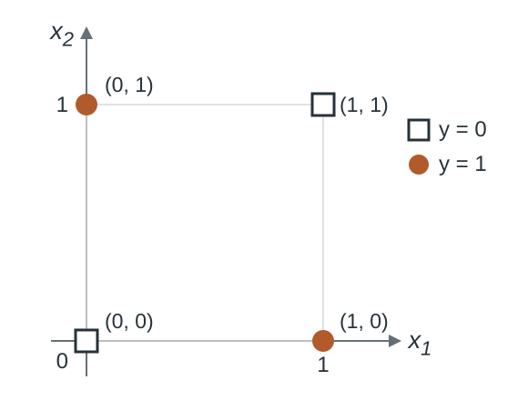
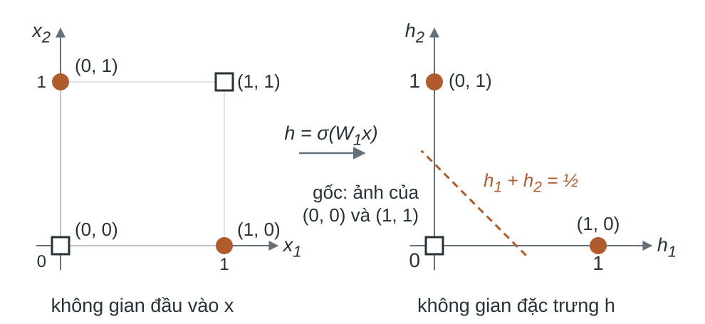
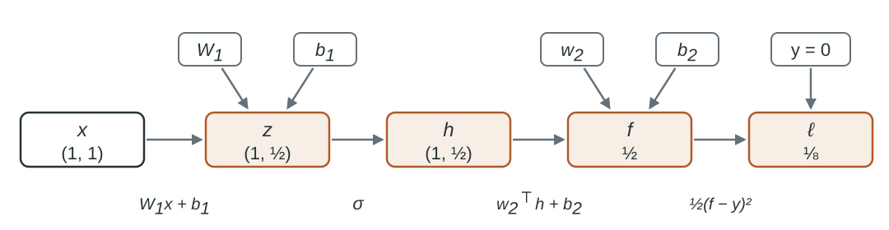
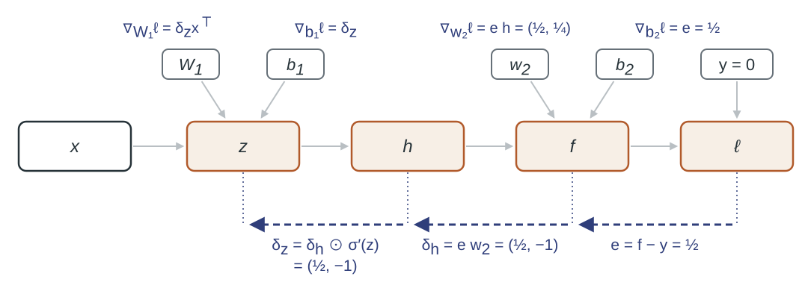
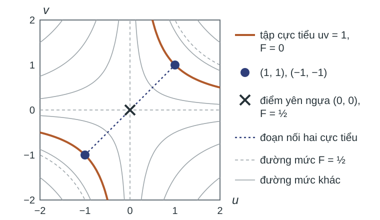
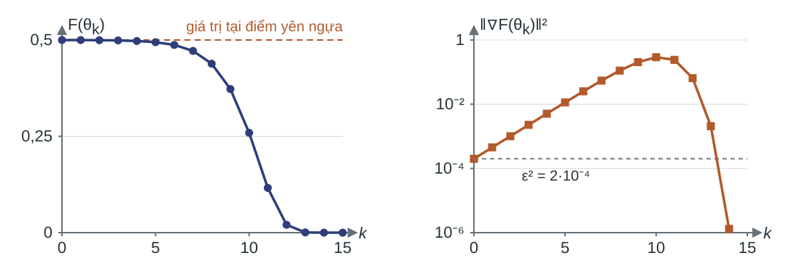

Mở rộng mô hình và dữ liệu Khả năng biểu diễn của mạng nơ-ron và tối ưu ngẫu nhiên
Cơ sở toán học cho AI
Bài 06
Trường Đại học Công nghệ
Hai giới hạn của các phương pháp ở Bài 05 là điểm xuất phát. Thứ nhất, mọi phương pháp đó (hạ gradient, Newton) dùng toàn bộ $n$ mẫu ở mỗi bước: một bước hạ gradient tốn $O(nd)$, một bước Newton tốn $O(nd^2+d^3)$. Thứ hai, dự đoán tuyến tính theo đặc trưng không biểu diễn được một số hàm đích, XOR là trường hợp điển hình, còn mở rộng đặc trưng thủ công làm số chiều $d$ tăng với các hệ quả thống kê đã thấy ở phần hồi quy nhiều chiều của Bài 05.
Lời đáp cho hai giới hạn gồm ba bước: mạng hai tầng biểu diễn XOR, với rủi ro thực nghiệm không lồi; gradient theo mọi tham số tính bằng lan truyền ngược, cùng điều gradient chứng nhận khi mục tiêu không lồi; gradient trên một lô nhỏ mẫu thay gradient đầy đủ, cùng tốc độ hội tụ khi gradient có nhiễu, cho hàm lồi mạnh và cho hàm không lồi.
Mục tiêu học tập
Dựng mạng hai tầng biểu diễn XOR, chứng minh rủi ro thực nghiệm của mạng không lồi. Tính gradient bằng lan truyền ngược; phân loại điểm dừng; áp dụng định lý chuẩn gradient. Tính sai số của gradient lô nhỏ; thực hiện hạ gradient ngẫu nhiên (SGD) lô nhỏ. Áp dụng định lý hội tụ SGD cho hàm lồi mạnh, không lồi; so dừng sớm và chính quy hóa. Chọn hạ gradient đầy đủ, Newton hay SGD theo $n,$ $p$ và tính lồi. Mục tiêu 1 ứng với mạch 2: đặc trưng affine không làm XOR tách được (Mệnh đề 06.3), một mạng hai đơn vị ẩn biểu diễn đúng XOR, và phản ví dụ cho tính lồi. Phản ví dụ gồm hai cực tiểu toàn cục đối xứng qua phép đổi chỗ hai đơn vị ẩn, trung điểm của chúng và bất đẳng thức lồi $F\bigl(\tfrac12\theta+\tfrac12\theta'\bigr)\le\tfrac12F(\theta)+\tfrac12F(\theta')$ bị vi phạm tại trung điểm: hai đầu mút có $F=0$, trung điểm có $F=\tfrac14$. Người học chỉ nêu kết luận “$F$ không lồi” mà không dựng được hai điểm, trung điểm và bất đẳng thức bị vi phạm thì chưa đạt mục tiêu.
Mục tiêu 2 ứng với mạch 3 và mạch 4: tính truyền xuôi và truyền ngược, kiểm một thành phần bằng sai phân hữu hạn, đếm số phép nhân của hai chiều; phân loại điểm dừng bằng dấu trị riêng của Hessian, áp dụng bổ đề giảm và định lý hội tụ chuẩn gradient, nêu đại lượng mà định lý đó chặn. Bài tập cuối mạch 4 dùng $F(u,v)=\tfrac12(uv-1)^2$: gốc là điểm dừng không là cực tiểu địa phương; tại $(2,\tfrac12)$ Hessian có trị riêng $0$ và $\tfrac{17}4$, phép kiểm tra bậc hai không kết luận và giá trị $F=0$ quyết định.
Mục tiêu 3 ứng với mạch 5: kỳ vọng và sai số bình phương trung bình của gradient lô nhỏ khi chọn có và không hoàn lại, và một bước của thuật toán hạ gradient ngẫu nhiên (stochastic gradient descent, SGD) lô nhỏ trên mạng. Mục tiêu 4 ứng với mạch 6: mức nhiễu nền của bước hằng và tốc độ $O(1/k)$ của bước giảm dần trên hàm lồi mạnh, cận $O(1/\sqrt K)$ trên hàm không lồi, tỉ lệ giữ của dừng sớm và của chính quy hóa bậc hai.
Mục tiêu 5 ứng với bảng lựa chọn phương pháp ở mạch kết luận và câu 1 của câu hỏi tự kiểm tra. Một lựa chọn đạt khi nêu đủ ba tiêu chí: chi phí một bước ($np^2+p^3$ cho Newton, $np$ cho hạ gradient đầy đủ, $bp$ cho SGD), giả thiết (lồi mạnh, gradient Lipschitz, chặn phương sai) và bảo đảm hội tụ.
Các mục tiêu hỗ trợ các chuẩn đầu ra bài học (LLO) sau: một phần LLO11, một phần LLO12 và phần so sánh chi phí của LLO15 (phương pháp Newton); các chuẩn đầu ra học phần (CLO) liên quan là CLO1, CLO2, CLO4 của đề cương.
Kiến thức cần có: quy tắc dây chuyền dạng Jacobian chuyển vị và phép kiểm tra bậc hai bằng Hessian (Bài 00); hàm lồi và quy tắc hợp thành giữ tính lồi (Bài 01–02); hạ gradient, giả thiết gradient Lipschitz và bổ đề giảm (Bài 04); kết luận của Bài 05 về chi phí, bài toán XOR và chính quy hóa. Ghi chú bài giảng Bài 06 phát biểu lại với ký hiệu chung và chứng minh đầy đủ các định lý hội tụ của Bài 05b và tính không chệch của gradient lô nhỏ của Bài 05c; trên lớp, các kết quả này được phát biểu và kiểm tra trên ví dụ.
Nội dung
Bài toán huấn luyện khi mô hình và dữ liệu lớn Biểu diễn phi tuyến và mạng hai tầng Lan truyền ngược trên đồ thị tính toán Điểm dừng và bảo đảm của gradient khi không lồi Gradient lô nhỏ và chi phí mỗi bước Tốc độ hội tụ dưới nhiễu và dừng sớm Tổng hợp và lựa chọn phương pháp Hai giới hạn của Bài 05 và ký hiệu chung mở bài (mục 1). Giới hạn biểu diễn được xử lý ở mục 2–4: mạng hai tầng biểu diễn được XOR nhưng làm rủi ro thực nghiệm không lồi; lan truyền ngược tính gradient một mẫu với chi phí $O(p)$; khi mục tiêu không lồi, gradient chỉ chứng nhận điểm dừng xấp xỉ. Giới hạn chi phí được xử lý ở mục 5–6: gradient lô nhỏ có chi phí mỗi bước không phụ thuộc $n$, đổi lại bằng nhiễu; với bước hằng, SGD trên hàm lồi mạnh dừng ở một mức nhiễu nền, trên hàm không lồi chỉ còn cận $O(1/\sqrt K)$ cho bình phương chuẩn gradient (Hệ quả 06.34), và thời điểm dừng được chọn theo tập xác thực. Mục 7 tổng hợp điều mất, điều còn giữ và quy tắc chọn phương pháp.
Tài liệu đọc trước: Goodfellow, Bengio và Courville (2016), §6.1, §6.5, §§8.1–8.3.
Ngữ cảnh: dữ liệu, mô hình và rủi ro
Ký hiệu: dữ liệu ${\{(x_i,y_i)\}_{i=1}^n},$ $x_i\in\mathbb R^d;$ mô hình $f(x;\theta),$ $\theta\in\mathbb R^p.$
Lưu ý: $d$: số chiều đầu vào; $p$: số tham số học được; với mạng nơ-ron, $p$ có thể lớn hơn $d$ nhiều.
$$\begin{aligned}F(\theta)&=\frac1n\sum_{i=1}^n\ell_i(\theta),\\\ell_i(\theta)&=\ell\bigl(f(x_i;\theta),y_i\bigr).\end{aligned}$$
$F$: rủi ro thực nghiệm (empirical risk), mất mát trung bình trên các mẫu quan sát được.
$$R(\theta)=\mathbb E_{(X,Y)\sim P}\,\ell\bigl(f(X;\theta),Y\bigr).$$
$R$: rủi ro kỳ vọng (expected risk; Bài 05); $P$: phân phối sinh dữ liệu, chưa biết.
Rủi ro kỳ vọng $R$ là mất mát trung bình theo phân phối $P$ sinh ra dữ liệu. Vì $P$ chưa biết, $R$ không tính được; $F$ là ước lượng của $R$ từ $n$ mẫu quan sát, và $\ell_i$ là mất mát trên mẫu thứ $i$. Mất mát bình phương $\ell(f,y)=\tfrac12(f-y)^2$ được chọn để tính thủ công; mất mát logistic của Bài 05 cũng lồi theo $f$, và kết luận về tính không lồi của bài vẫn giữ với mất mát đó: phản ví dụ trung điểm vẫn dùng được, dù không có cực tiểu khi không chính quy hóa.
Hai số chiều có vai trò khác nhau: $d$ do dữ liệu quyết định, $p$ do mô hình quyết định. Mô hình tuyến tính có hệ số chặn $c$ có $p=d+1$; mạng nơ-ron có số tham số tăng theo số đơn vị ẩn, nên $p$ có thể lớn hơn $d$ nhiều bậc. Chi phí tính toán của các phương pháp trong bài được đo theo $n$ và $p$.
Đối chiếu ký hiệu (Nhận xét 06.2). Bài 05 viết đầu vào thô $u\in\mathbb R^{d_0}$, đặc trưng $x=\varphi(u)\in\mathbb R^d$, hệ số chặn $w_0$ và dãy lặp $w_k$; ở đây $d$ ứng với $d_0$, đầu vào thô là $x\in\mathbb R^d$ và mô hình tuyến tính $w^\top x+c$ có $p=d+1$ tham số. Bài 05b viết dãy lặp $x_k\in\mathbb R^n$, hàm mục tiêu $f$ và số mẫu $N$; khi dẫn định lý của Bài 05b, $x_k$ đọc là $\theta_k$, $f$ là $F$, số chiều $n$ là $p$ và $N$ là $n$. Bài 05c viết rủi ro thực nghiệm $J$, số mẫu $N$ và $d$ cho số chiều tham số; ở đây là $F$, $n$ và $p$.
Ngữ cảnh: bài toán huấn luyện và dãy lặp
Huấn luyện: cực tiểu hóa $F$ trên $\mathbb R^p.$ Dãy lặp dạng chung:
$$\boxed{\theta_{k+1}=\theta_k-\eta_kg_k},\qquad k=0,1,2,\dots$$
$g_k$: gradient đầy đủ $\nabla F(\theta_k)$ hoặc ước lượng gradient trên một lô mẫu; $\eta_k>0$: bước.
Tập xác thực: mẫu tách riêng, không dùng tính gradient, dùng để ước lượng $R.$
Nhu cầu: cực tiểu hóa $F$ bằng gradient khi $f$ phi tuyến theo $\theta$ và $n$ lớn.
Dãy lặp dạng chung bao gồm hai phương pháp chính của bài. Với $g_k=\nabla F(\theta_k)$ là hạ gradient đầy đủ của Bài 04, mỗi bước dùng toàn bộ $n$ mẫu. Với $g_k$ tính trên một lô mẫu là hạ gradient ngẫu nhiên, xét từ mạch 5; khi đó $g_k$ là biến ngẫu nhiên và các bảo đảm hội tụ được phát biểu theo kỳ vọng.
Tập xác thực (validation set) là phần mẫu tách khỏi dữ liệu huấn luyện; mất mát trung bình trên tập này ước lượng $R$ và được dùng để chọn bước dừng, hệ số chính quy hóa. Dòng nhu cầu ghép hai điều kiện mà Bài 01–04 không xét, $f$ phi tuyến theo $\theta$ và $n$ lớn; đó là hai giới hạn biểu diễn và chi phí, được đối chiếu với giả thiết lồi của Bài 01–04.
Quy ước chữ $b$: độ chệch (bias) của mạng luôn có chỉ số, $b_1$, $b_2$; $b$ không chỉ số là kích thước lô (batch size) của lô nhỏ (mini-batch). Chữ $\sigma$ là hàm kích hoạt của mạng. Chặn phương sai của gradient ngẫu nhiên viết là $\tau^2$, như Bài 05; Bài 05b và 05c viết đại lượng này là $\sigma^2$.
Giả thiết lồi và hai giới hạn khi mở rộng quy mô
Dòng “Mục tiêu” là lý do thống kê: $F$ chỉ là đại lượng thay thế (surrogate) cho $R$. Theo Bài 05, khi số đặc trưng tăng, nghiệm khớp dữ liệu huấn luyện tốt hơn nhưng khớp kém dần trên dữ liệu mới, và trên dữ liệu tách được, mất mát logistic không có cực tiểu nếu không chính quy hóa. Cực tiểu chính xác của rủi ro thực nghiệm vì vậy không phải mục tiêu; dừng sớm và chính quy hóa là một phần của phương pháp. Khả năng tổng quát hóa (generalization) được đo bằng $R$ của tham số tìm được.
Dòng “Gradient”: hạ gradient đầy đủ với bước $\eta\le1/L$ giảm mục tiêu ở mỗi bước (bổ đề giảm). Gradient lô nhỏ là ước lượng không chệch nhưng có phương sai, nên chỉ còn bất đẳng thức một bước có số hạng nhiễu, và mục tiêu có thể tăng theo kỳ vọng ở một bước.
Dòng “Bảo đảm”: với mục tiêu lồi khả vi, mọi điểm dừng là cực tiểu toàn cục. Mô hình phi tuyến làm mất tính chất này, và bảo đảm còn lại chỉ chặn chuẩn gradient, tức chỉ chứng nhận điểm dừng xấp xỉ. Với mục tiêu lồi mạnh, SGD với bước giảm dần $\tfrac1{\mu(k+1)}$ hội tụ theo kỳ vọng tới điểm cực tiểu với tốc độ $O(1/k)$ (Định lý 06.31).
Dòng “Chi phí” là lý do tính toán: khi một bước dùng đủ $n$ mẫu vượt ngân sách mỗi bước, hạ gradient ngẫu nhiên trên lô $b$ mẫu là phương án dùng được, đổi lại bằng nhiễu và tốc độ chậm hơn. Dòng Bảo đảm và dòng Chi phí là hệ quả của hai giới hạn của Bài 05.
Hai giới hạn: biểu diễn và chi phí
Nhắc lại: với $F$ lồi, khả vi:
$$\nabla F(\theta^*)=0\ \Longrightarrow\ \theta^*\in\operatorname*{arg\,min}_{\theta\in\mathbb R^p}F(\theta).$$
Giới hạn (ii), biểu diễn: dự đoán tuyến tính theo đầu vào gốc không biểu diễn được XOR.
Mô hình phi tuyến theo $\theta$ khắc phục được nhưng làm $F$ không lồi; kéo theo trên không còn được bảo đảm.
Giới hạn (i), chi phí: một bước hạ gradient trên $n$ mẫu tốn $O(np).$
Hai giới hạn sinh ra dòng Bảo đảm và dòng Chi phí của bảng đối chiếu; chúng là kết luận của Bài 05 về tối ưu tất định. Giới hạn (ii), biểu diễn: không điểm số affine nào phân lớp đúng bốn điểm XOR (Mệnh đề 05.38); đặc trưng thủ công sửa được nhưng làm số chiều tăng. Đặc trưng thủ công giữ mô hình tuyến tính theo $\theta$, nên $F$ vẫn lồi. Tính không lồi đến từ mô hình phi tuyến theo $\theta$, như mạng có đặc trưng học được: mô hình này biểu diễn được XOR nhưng làm rủi ro thực nghiệm không lồi, nên kéo theo “gradient bằng không thì là cực tiểu toàn cục” của Bài 02 và Bài 04 không còn được bảo đảm.
Giới hạn (i), chi phí: một bước hạ gradient trên mô hình tuyến tính tốn $O(nd)$, một bước Newton tốn $O(nd^2+d^3)$, và cả hai dùng toàn bộ $n$ mẫu. Với mạng có $p$ tham số, gradient một mẫu tốn $O(p)$ nhờ lan truyền ngược, nên một bước hạ gradient đầy đủ tốn $O(np)$. Mặt trang viết chung $O(np)$: với mô hình tuyến tính có hệ số chặn, $p=d+1$ nên $O(np)=O(nd)$.
2. Biểu diễn phi tuyến và mạng hai tầngMuốn biểu diễn XOR bằng đặc trưng học được từ dữ liệu, thay cho đặc trưng thủ công.
XOR · đặc trưng thủ công · mạng hai tầng · đối xứng hoán vị · tính không lồi
Dự đoán tuyến tính theo hai đặc trưng gốc không biểu diễn được XOR: đây là giới hạn (ii) của phần mở đầu. Giới hạn này được chứng minh trên bốn điểm, sửa bằng đặc trưng tích rồi bằng một tầng ẩn; mạng hai tầng $f(x;\theta)$ với $p=md+2m+1$ tham số ra đời từ đó, và rủi ro thực nghiệm $F(\theta)$ của nó không lồi. Lan truyền ngược nhận $f$ và $F$ này để tính gradient.
Bài toán XOR
Nhu cầu: phân lớp đúng bốn điểm XOR bằng mô hình tuyến tính ${f(x;w,c)=w^\top x+c}.$
Nhãn $\{0,1\}$ (Bài 05: $\pm1,$ ${y_\pm=2y-1}$); mất mát ${\ell=\tfrac12(f-y)^2}$ để tính thủ công.

$w\in\mathbb R^2,$ $c\in\mathbb R;$ dự đoán lớp $1$ khi $f>\tfrac12.$
XOR (phép “hoặc loại trừ”) cho đầu ra $1$ khi đúng một đầu vào bằng $1$. Bốn điểm vừa là toàn bộ dữ liệu huấn luyện vừa là toàn bộ miền quan tâm, nên bài toán không đặt vấn đề tổng quát hóa; câu hỏi duy nhất là mô hình có biểu diễn được hàm đích trên bốn điểm hay không (Goodfellow, Bengio và Courville, 2016, §6.1).
Mô hình tuyến tính ở đây dùng hai đặc trưng gốc $x_1,x_2$. Hệ số chặn viết $c$ vì chữ $b$ dành cho kích thước lô ở phần gradient lô nhỏ. Ngưỡng $\tfrac12$ là trung điểm giữa hai nhãn $0$ và $1$.
Ghi chú bài giảng Bài 05 (Mệnh đề 05.38) dùng cùng bốn điểm với nhãn $\pm1$: $+1$ cho $(0,1)$, $(1,0)$ và $-1$ cho $(0,0)$, $(1,1)$, tức $y_\pm=2y-1$. Chứng minh của mệnh đề đó chỉ dùng giá trị của hàm affine tại bốn điểm, nên không phụ thuộc cách mã hóa nhãn. Mất mát bình phương cho nghiệm bình phương nhỏ nhất tính thủ công được, và cho $F=0$ tại một mạng biểu diễn đúng XOR.
Tính không tách được tuyến tính của XOR
Nhắc lại (Bài 05): dữ liệu tách được tuyến tính (linearly separable) nếu có $w,c$ với ${y_{\pm,i}\,g(x_i)>0}$ mọi $i,$ ${g(x)=w^\top x+c}.$
Mệnh đề. Dữ liệu XOR không tách được tuyến tính (Mệnh đề 05.38).
Chứng minh. Với mọi $w,c$:
$$\begin{aligned}g(1,0)+g(0,1)&=w_1+w_2+2c\\&=g(0,0)+g(1,1).\end{aligned}$$
Tách được đòi hỏi vế trái $>0>$ vế phải, mâu thuẫn. $\square$
Định nghĩa là nhắc lại từ phần hồi quy logistic của Bài 05 (nhãn $\pm1$, biên có dấu (signed margin, còn gọi là lề có dấu) $y_ix_i^Tw>0$). Mệnh đề là phần (1) của Mệnh đề 05.38 trong ghi chú bài giảng Bài 05. Với mô hình của bài toán XOR, $g=f-\tfrac12$ và $y_\pm=2y-1$; điều kiện $y_{\pm,i}\,g(x_i)>0$ nghĩa là $f>\tfrac12$ ở lớp $1$ và $f<\tfrac12$ ở lớp $0$, tức phân lớp đúng bằng ngưỡng $\tfrac12$.
Đẳng thức tổng có nghĩa hình học: hai đường chéo của hình vuông có chung trung điểm $(\tfrac12,\tfrac12)$, và giá trị của một hàm affine tại trung điểm bằng trung bình giá trị tại hai đầu mút. Nếu $g>0$ tại hai điểm lớp $1$ thì $g(\tfrac12,\tfrac12)>0$; nếu $g<0$ tại hai điểm lớp $0$ thì $g(\tfrac12,\tfrac12)<0$. Mâu thuẫn này là giới hạn biểu diễn của điểm số affine; ví dụ bình phương nhỏ nhất kế tiếp đo giới hạn đó bằng giá trị của $F$.
Ví dụ: bình phương nhỏ nhất trên dữ liệu XOR
Mô hình ${f=w_1x_1+w_2x_2+c},$ bốn điểm XOR, ${F=\tfrac14\sum_i\tfrac12\bigl(f(x_i)-y_i\bigr)^2}.$
Tính nghiệm bình phương nhỏ nhất $(w_1,w_2,c).$
Ma trận thiết kế $A$ có các hàng $(x_1,x_2,1);$ hệ phương trình chuẩn:
$$A^\top A=\begin{pmatrix}2&1&2\\1&2&2\\2&2&4\end{pmatrix},\qquad A^\top y=\begin{pmatrix}1\\1\\2\end{pmatrix}.$$
Nghiệm ${w=(0,0)},$ ${c=\tfrac12};$ phần dư $\pm\tfrac12$ tại cả bốn điểm, ${F=\tfrac18}.$
Diễn giải: mô hình tốt nhất dự đoán $\tfrac12$ cho mọi đầu vào, không phân biệt hai lớp.
Kiểm tra nghiệm: thế $(w_1,w_2,c)=(0,0,\tfrac12)$ vào hệ $A^\top A(w_1,w_2,c)^\top=A^\top y$, ba hàng cho $2\cdot\tfrac12=1$, $2\cdot\tfrac12=1$ và $4\cdot\tfrac12=2$. Phần dư $f-y$ tại $(0,0),(0,1),(1,0),(1,1)$ là $\tfrac12,-\tfrac12,-\tfrac12,\tfrac12$, nên $F=\tfrac14\cdot4\cdot\tfrac12\cdot\tfrac14=\tfrac18$.
Nghiệm hằng $\tfrac12$ bằng trung bình của nhãn. Kết quả khớp Mệnh đề 05.38: không hàm affine nào phân lớp đúng, và hàm affine tối ưu theo bình phương nhỏ nhất bỏ qua đầu vào (Ví dụ 06.1). Thêm đặc trưng tích $x_1x_2$ sửa được giới hạn này.
Đặc trưng thủ công và chi phí theo số chiều
Số tham số (đơn thức bậc $\le q$ của $d$ biến; Mệnh đề 05.39): ${p=\binom{d+q}{q}}$
Mỗi bước: $O(np)$ (hạ gradient), $O(np^2+p^3)$ (Newton, Bài 05).
Nhận xét. Đặc trưng thủ công làm $p$ tăng nhanh, kéo theo chi phí và nguy cơ quá khớp (overfitting).
Nhu cầu: phép biến đổi đặc trưng có tham số, học từ dữ liệu, thay cho liệt kê đơn thức.
Mệnh đề 05.38 cho biết giới hạn thuộc về không gian đặc trưng, nên đổi không gian đặc trưng thì giới hạn mất. Với đặc trưng tích $\varphi(x)=(x_1,x_2,x_1x_2)$, hàm $f=x_1+x_2-2x_1x_2$ tuyến tính theo $\varphi$ và khớp đúng XOR. Kiểm tra: $f(0,0)=0$, $f(0,1)=f(1,0)=1$, $f(1,1)=1+1-2=0$. Với $w_0+w_1x_1+w_2x_2+w_3x_1x_2$, bốn điều kiện cho nghiệm duy nhất $(0,1,1,-2)$, tức chính hàm trên.
Cách sửa này cần biết trước dạng tương tác. Khi không biết, phải thêm mọi đơn thức tới bậc $q$. Ở đây $p$ là số đơn thức bậc không quá $q$, kể cả đơn thức hằng $1$, nên $p$ là số tham số của mô hình tuyến tính theo các đơn thức này, tính cả hệ số chặn; ký hiệu $q$ cho bậc để không trùng với $p$, và Bài 05 viết cùng công thức là $\binom{d_0+q}{q}$ với $d_0$ biến đầu vào.
Nhận xét nêu hai loại chi phí của việc tăng $p$. Chi phí tính toán: với $d=1000$, $q=2$, số tham số là $p=501\,501$; một bước hạ gradient tốn khoảng $np\approx5\cdot10^5n$ phép tính, còn một bước Newton chỉ riêng phần giải hệ đã cần khoảng $p^3\approx1{,}26\cdot10^{17}$ phép tính. Chi phí thống kê: phần hồi quy nhiều chiều của Bài 05 cho thấy khi số tham số $p$ tăng với $n$ cố định, nghiệm khớp dữ liệu huấn luyện tốt hơn nhưng sai số trên dữ liệu mới tăng dần; đó là quá khớp, và chính quy hóa chỉ giảm bớt hiện tượng này.
Giới hạn này tạo nhu cầu cho một phép biến đổi đặc trưng có tham số, học được từ dữ liệu, thay cho việc liệt kê mọi đơn thức.
Phép biến đổi đặc trưng bằng tầng ẩn
Trực quan. ${h_1=\max\{0,x_1-x_2\}},$ ${h_2=\max\{0,x_2-x_1\}}$ đưa ${(0,0),(1,1)\mapsto(0,0)},$ ${(1,0)\mapsto(1,0)},$ ${(0,1)\mapsto(0,1)}.$ Trong không gian $h,$ đường thẳng ${h_1+h_2=\tfrac12}$ tách hai lớp.

Phép biến đổi gộp hai điểm lớp $0$ vào cùng một điểm. Không phép biến đổi affine nào làm XOR tách được tuyến tính, dù chọn bao nhiêu đặc trưng (Mệnh đề 06.3): hợp của hai ánh xạ affine là affine, nên một bộ tách trong không gian ảnh cho một điểm số affine tách bốn điểm XOR. Hàm $\max\{0,\cdot\}$ làm mất tính affine tại $x_1=x_2$. Goodfellow, Bengio và Courville (2016, Hình 6.1) dùng một phép biến đổi khác với cùng ý: học một không gian đặc trưng trong đó bài toán trở thành tuyến tính.
Hai đặc trưng $h_1,h_2$ tạo thành tầng ẩn (hidden layer): chúng là $\sigma$ áp vào một hàm affine của $x$, với $\sigma(z)=\max\{0,z\}$; hệ số của hàm affine là tham số. Ghép thêm một tầng tuyến tính lên $h$ cho mạng hai tầng, và tham số của mạng được học bằng tối ưu. Kiểm tra trong không gian $h$: $h_1+h_2$ bằng $0$ cho lớp $0$ và bằng $1$ cho lớp $1$, nên ngưỡng $\tfrac12$ tách đúng.
Ví dụ: mạng hai đơn vị ẩn biểu diễn XOR
Tính $f$ tại bốn đầu vào với tham số $\theta_A$ (mỗi hàng của $W_1$ là một đơn vị ẩn):
$$W_1=\begin{pmatrix}1&-1\\-1&1\end{pmatrix},$$
${b_1=(0,0)^\top},$ ${w_2=(1,1)^\top},$ ${b_2=0}.$
Truyền xuôi: ${z=W_1x+b_1},$ ${h=\max\{0,z\}}$ theo thành phần (hàm ReLU; điểm gãy tại ${z=0}$), ${f=w_2^\top h+b_2}.$
Kết luận: ${f(x;\theta_A)=\lvert x_1-x_2\rvert}$ trên $\{0,1\}^2,$ nên ${F(\theta_A)=0}.$
Hai hàng của $W_1$ là hai hàm affine bên trong $h_1$, $h_2$: $z_1=x_1-x_2$, $z_2=x_2-x_1$. Hàm $\sigma(z)=\max\{0,z\}$ gọi là hàm ReLU; đơn vị ẩn dùng hàm này là đơn vị tuyến tính chỉnh lưu (rectified linear unit, ReLU). Tầng ra cộng hai đặc trưng, $f=h_1+h_2=\lvert x_1-x_2\rvert$, nên $f$ bằng nhãn tại cả bốn điểm và $F(\theta_A)=0$. Tham số này được gọi là $\theta_A$; phép đổi chỗ hai đơn vị ẩn dùng lại nó để dựng tham số đối xứng $\theta_B$.
Tại $(0,0)$ và $(1,1)$ cả hai tiền kích hoạt bằng $0$, tức nằm đúng điểm gãy của ReLU. Giá trị hàm vẫn xác định; chỉ đạo hàm tại điểm gãy cần quy ước, và quy ước đó được nêu ở thuật toán lan truyền ngược. Lập luận về tính không lồi (Mệnh đề 06.7) chỉ dùng giá trị hàm, nên không bị ảnh hưởng.
Goodfellow, Bengio và Courville (2016, (6.4)–(6.11)) cho một nghiệm khác, $W_1=\left(\begin{smallmatrix}1&1\\1&1\end{smallmatrix}\right)$, $b_1=(0,-1)$, $w_2=(1,-2)$, $b_2=0$; nghiệm đó xuất hiện trong câu hỏi cuối phần.
Mạng nơ-ron hai tầng
Định nghĩa. Cho ${d,m\in\mathbb N_{>0}},$ ${W_1\in\mathbb R^{m\times d}},$ ${b_1\in\mathbb R^m},$ ${w_2\in\mathbb R^m},$ ${b_2\in\mathbb R}$ và ${\sigma:\mathbb R\to\mathbb R}$ áp theo từng thành phần. Mạng hai tầng là hàm
$$f(x;\theta)=w_2^\top\sigma(W_1x+b_1)+b_2,$$
với ${\theta=(W_1,b_1,w_2,b_2)\in\mathbb R^p},$ ${p=md+2m+1}.$
Ký hiệu: $\sigma$ là hàm kích hoạt; $m$ là số đơn vị ẩn; $z=W_1x+b_1$ là tiền kích hoạt.
Hệ quả. Nếu $\sigma(z)=z$ thì ${f=(W_1^\top w_2)^\top x+(w_2^\top b_1+b_2)}$ là hàm affine của $x,$ nên không phân lớp đúng XOR (Hệ quả 06.5).
Thuật ngữ: $f$ là mạng nơ-ron (neural network) hai tầng; $\sigma$ là hàm kích hoạt (activation function); $m$ là số đơn vị ẩn (hidden unit); $z=W_1x+b_1\in\mathbb R^m$ là tiền kích hoạt (pre-activation); $h=\sigma(z)$ là kích hoạt; phép tính lần lượt $z$, $h$, $f$ là truyền xuôi (forward pass). Mặc định của bài là $\sigma(z)=\max\{0,z\}$.
Đếm tham số: $W_1$ có $md$ phần tử, $b_1$ và $w_2$ mỗi vector $m$ phần tử, $b_2$ một phần tử. Mạng biểu diễn XOR là trường hợp $d=m=2$, $p=9$. Với ảnh $28\times28$ điểm ảnh, $d=784$, và $m=100$ đơn vị ẩn, $p=78\,400+100+100+1=78\,601$; số này dùng lại ở phần lan truyền ngược để đếm chi phí gradient.
Hệ quả giải thích vai trò của $\sigma$: không có hàm kích hoạt phi tuyến, hai tầng tuyến tính chồng lên nhau vẫn là một hàm affine, và Mệnh đề 05.38 cho thấy không hàm affine nào phân lớp đúng XOR. Với chính $\theta_A$ của ví dụ trước và $\sigma(z)=z$, $W_1^\top w_2=(0,0)$ và $w_2^\top b_1+b_2=0$, nên mạng trả về $0$ tại mọi đầu vào. Mạng sâu lặp lại cấu trúc “affine rồi $\sigma$” nhiều lần; bài này chỉ cần hai tầng.
Rủi ro thực nghiệm theo tham số mạng
$$F(\theta)=\frac1n\sum_{i=1}^n\tfrac12\bigl(f(x_i;\theta)-y_i\bigr)^2.$$
Huấn luyện mạng hai đơn vị ẩn cho XOR là cực tiểu hóa $F$ trên $\mathbb R^9$ với bốn mẫu; $\theta_A$ đạt ${F=0}.$
Mất mát $\ell(f,y)=\tfrac12(f-y)^2$ lồi theo $f$. Quy tắc hợp thành của Bài 02 cho: $\theta\mapsto\ell(f(x_i;\theta),y_i)$ lồi nếu $\theta\mapsto f(x_i;\theta)$ affine. Với mô hình tuyến tính điều kiện này đúng; với mạng, $f$ chứa tích của tham số tầng ra với tham số tầng ẩn và chứa $\sigma$, nên quy tắc không áp dụng (Boyd và Vandenberghe, 2004, §3.2).
Để chứng minh $F$ không lồi cần một phản ví dụ, và trên bài toán XOR phản ví dụ đến từ đối xứng hoán vị các đơn vị ẩn. Nhầm lẫn thường gặp: “mất mát lồi theo $f$” không kéo theo “rủi ro lồi theo $\theta$”.
Kết luận không lồi không phụ thuộc việc chọn mất mát bình phương (Nhận xét 06.8). Với nhãn $\pm1$ và mất mát logistic $\log(1+e^{-yf})$, hai tham số $\theta_A$, $\theta_B$ (đổi chỗ hai đơn vị ẩn) cho cùng giá trị $F=\tfrac12\bigl(\log2+\log(1+e^{-1})\bigr)\approx0{,}503$, còn trung điểm của chúng cho $f\equiv0$ và $F=\log2\approx0{,}693$, lớn hơn trung bình hai đầu mút; một hàm lồi không thể có tính chất này.
Ví dụ: đổi chỗ hai đơn vị ẩn của mạng XOR
Tham số $\theta_A$ của ví dụ mạng hai đơn vị ẩn: ${f(x;\theta_A)=\lvert x_1-x_2\rvert},$ ${F(\theta_A)=0}.$
Đổi chỗ hai đơn vị ẩn: đổi đồng thời hai hàng của $W_1,$ hai phần tử của $b_1$ và của $w_2.$
Tính tham số mới $\theta_B$ và $F(\theta_B).$
Diễn giải: ${\theta_B\ne\theta_A}$ cho cùng hàm $\lvert x_1-x_2\rvert,$ nên cực tiểu toàn cục của $F$ không duy nhất.
Vì $b_1$ và $w_2$ có hai phần tử bằng nhau, phép đổi chỗ chỉ đổi hai hàng của $W_1$. Đơn vị ẩn thứ nhất của $\theta_B$ tính $\max\{0,x_2-x_1\}$, đơn vị thứ hai tính $\max\{0,x_1-x_2\}$; tổng vẫn là $\lvert x_1-x_2\rvert$. Kiểm tra tại $(0,1)$: $z=(1,-1)$, $h=(1,0)$, $f=1$, đúng nhãn (Ví dụ 06.5).
Hiện tượng không phụ thuộc số liệu: thứ tự đánh số các đơn vị ẩn không ảnh hưởng tới hàm mà mạng tính. Mệnh đề đối xứng hoán vị phát biểu điều đó cho mọi phép hoán vị, và cặp $\theta_A$, $\theta_B$ là đầu vào cho phép kiểm tra tính lồi.
Đối xứng hoán vị các đơn vị ẩn
Mệnh đề (Mệnh đề 06.6). Với mọi ma trận hoán vị ${P\in\mathbb R^{m\times m}}$ (mỗi hàng, mỗi cột có đúng một số $1$) và mọi $x\in\mathbb R^d,$
$$f(x;PW_1,Pb_1,Pw_2,b_2)=f(x;W_1,b_1,w_2,b_2).$$
Chứng minh. ${\sigma(Pz)=P\sigma(z)}$ vì $\sigma$ áp theo từng thành phần, và ${P^\top P=I}.$
Do đó $F(P\theta)=F(\theta)$ với mọi dữ liệu; mạng có $m$ đơn vị ẩn có $m!$ cách sắp thứ tự các đơn vị.
Ký hiệu $P\theta=(PW_1,Pb_1,Pw_2,b_2)$. Ma trận hoán vị có mọi phần tử bằng $0$ hoặc $1$, mỗi hàng và mỗi cột đúng một số $1$; $Pz$ sắp lại các thành phần của $z$. Chứng minh đầy đủ: $(Pw_2)^\top\sigma(PW_1x+Pb_1)=w_2^\top P^\top P\sigma(W_1x+b_1)=w_2^\top\sigma(W_1x+b_1)$; $F$ chỉ phụ thuộc $\theta$ qua các giá trị $f(x_i;\theta)$, nên $F(P\theta)=F(\theta)$. Mệnh đề nói ánh xạ $\theta\mapsto f(\cdot;\theta)$ không đơn ánh: khi các đơn vị có tham số đôi một khác nhau, mỗi điểm $\theta$ có $m!$ bản sao phân biệt cho cùng một hàm. Goodfellow, Bengio và Courville (2016, §8.2.2, tr. 284) gọi hiện tượng này là đối xứng không gian trọng số (weight space symmetry).
Hệ quả cho thực hành: hai lần huấn luyện cùng một mạng có thể cho hai bộ trọng số sai khác một phép hoán vị nhưng cùng hàm dự đoán. Nếu hai đơn vị ẩn được khởi tạo giống hệt nhau, chúng nhận cùng gradient và giữ giống nhau sau mọi bước; khởi tạo được trình bày ở Bài 06b.
Tính không lồi của rủi ro thực nghiệm
Mệnh đề (Mệnh đề 06.7). Cực tiểu toàn cục $\theta^*$ có hai đơn vị ẩn mang tham số khác nhau.
${P\theta:=(PW_1,Pb_1,Pw_2,b_2)}$ đổi chỗ hai đơn vị đó. Khi đó:
${P\theta^*\ne\theta^*}$ cũng là cực tiểu toàn cục;
nếu $F$ lồi, mọi điểm của đoạn $[\theta^*,P\theta^*]$ là cực tiểu toàn cục. Chứng minh. Đối xứng hoán vị; tập cực tiểu của hàm lồi là tập lồi.
Chứng minh đầy đủ: theo Mệnh đề 06.6, $F(P\theta^*)=F(\theta^*)$, nên $P\theta^*$ cũng là cực tiểu toàn cục; $P\theta^*\ne\theta^*$ vì hai đơn vị bị đổi chỗ có tham số khác nhau. Tập cực tiểu của một hàm lồi là tập lồi (Bài 01), nên nếu $F$ lồi thì cả đoạn nối hai cực tiểu nằm trong tập cực tiểu. Mệnh đề cho một phép kiểm tra tính lồi: nếu một điểm $(1-t)\theta^*+tP\theta^*$, $t\in(0,1)$, có $F$ lớn hơn $F(\theta^*)$ thì $F$ không lồi.
Phép kiểm tra cần một cực tiểu toàn cục có hai đơn vị khác nhau; khi mọi cực tiểu toàn cục có các đơn vị trùng nhau, nó không áp dụng (Nhận xét 06.8). Tính không lồi không cần ReLU: mạng tuyến tính hai tầng, chỉ có tích tham số, cũng không lồi (mạng tuyến tính một đơn vị ở phần điểm dừng).
Ví dụ: đoạn nối hai cực tiểu của mạng XOR
Đoạn ${\theta(t)=(1-t)\theta_A+t\theta_B},$ $t\in[0,1],$ giữa hai tham số đối xứng có ${F=0}.$
Tính $F(\theta(t)).$
${W_1(t)=(1-2t)\begin{pmatrix}1&-1\\-1&1\end{pmatrix}},$ nên ${f=\lvert1-2t\rvert\,\lvert x_1-x_2\rvert}.$
Tại ${t=\tfrac12}\text{:}$ ${W_1=0},$ ${f\equiv0},$ ${F=\tfrac14>0}.$
Kết luận: $F$ không lồi trên $\mathbb R^9.$
Trên XOR: $b_1=0$, $w_2=(1,1)$, $b_2=0$ không đổi dọc đoạn vì hai tham số $\theta_A$, $\theta_B$ chỉ khác nhau ở $W_1$. Chỉ hai điểm $(0,1)$, $(1,0)$ có sai số khác $0$, và $F(\theta(t))=\tfrac14\bigl(1-\lvert1-2t\rvert\bigr)^2$, tức $t^2$ khi $t\le\tfrac12$ và $(1-t)^2$ khi $t\ge\tfrac12$. Hình cho thấy đồ thị nằm trên dây cung nối $(0,0)$ và $(1,0)$, trái với định nghĩa hàm lồi.
Kết luận này nối với giới hạn biểu diễn ở phần mở đầu: đặc trưng thủ công khắc phục giới hạn bằng cách tăng số chiều; tầng ẩn khắc phục nó mà không liệt kê đơn thức, nhưng làm mất tính lồi. Phần lan truyền ngược tính gradient của $F$ này; phần điểm dừng xét điều gradient chứng nhận khi $F$ không lồi.
Bài tập: biểu diễn XOR và đối xứng của mạng
Câu hỏi:
Tìm $w_0,\dots,w_3$ để ${w_0+w_1x_1+w_2x_2+w_3x_1x_2}$ khớp XOR.
Với ${W_1=\begin{pmatrix}1&1\\1&1\end{pmatrix}},$ ${b_1=(0,-1)},$ ${w_2=(1,-2)},$ ${b_2=0}$: tính $z,$ $h,$ $f$ tại bốn đầu vào XOR.
Đổi chỗ hai đơn vị ẩn của mạng ở câu 2; tính $F$ tại trung điểm của hai tham số.
Tính số tham số $p$ khi ${d=784},$ ${m=100}.$ Gợi ý: ở câu 1, viết bốn điều kiện khớp tại bốn đầu vào. Ở câu 3, đổi chỗ hai đơn vị là đổi chỗ đồng thời hai hàng của $W_1$, hai phần tử của $b_1$ và hai phần tử của $w_2$; tham số mới cũng có $F=0$ theo đối xứng hoán vị, và giá trị tại trung điểm cho phép kiểm tra tính lồi. Ở câu 4, dùng $p=md+2m+1$.
Nguồn: câu 1 dùng đặc trưng tích của Mệnh đề 05.38(2); câu 2 là nghiệm của Goodfellow, Bengio và Courville (2016, (6.4)–(6.11)); câu 3 áp Mệnh đề 06.7 cho nghiệm đó; câu 4 là Ví dụ 06.4. Bài tập 06.1 của ghi chú luyện cùng phép kiểm tra với hàm kích hoạt bình phương.
Bài tập: biểu diễn XOR và đối xứng của mạng
Lời giải:
$(w_0,w_1,w_2,w_3)=(0,1,1,-2),$ duy nhất: bốn điều kiện xác định bốn ẩn.
$z=(0,-1),$ $(1,0),$ $(1,0),$ $(2,1);$ $h=(0,0),$ $(1,0),$ $(1,0),$ $(2,1);$ ${f=0,1,1,0}.$
Tham số đổi chỗ: ${b_1=(-1,0)},$ ${w_2=(-2,1)};$ trung điểm cho ${f=0,-\tfrac12,-\tfrac12,-\tfrac32},$ ${F=\tfrac{27}{32}>0}.$
${p=md+2m+1=78\,601}.$ Câu 1: bốn điều kiện $w_0=0$, $w_0+w_2=1$, $w_0+w_1=1$, $w_0+w_1+w_2+w_3=0$ xác định lần lượt bốn ẩn.
Câu 2: theo thứ tự $(0,0),(0,1),(1,0),(1,1)$. Mạng này cũng biểu diễn XOR (Goodfellow, Bengio và Courville, 2016, (6.7)–(6.11)). Tại $(0,1)$ và $(1,0)$, đơn vị thứ hai có $z_2=0$, nằm ở điểm gãy; giá trị hàm vẫn xác định.
Câu 3: đổi chỗ hai đơn vị giữ nguyên $W_1$ vì hai hàng bằng nhau. Trung điểm có $b_1=w_2=(-\tfrac12,-\tfrac12)$, nên $f=-\tfrac12\bigl(\sigma(z_1)+\sigma(z_2)\bigr)$ với $z=(x_1+x_2-\tfrac12)(1,1)$. Khi đó $F=\tfrac14\cdot\tfrac12\bigl(0+\tfrac94+\tfrac94+\tfrac94\bigr)=\tfrac{27}{32}$, trong khi hai đầu mút có $F=0$: ví dụ thứ hai cũng bác bỏ tính lồi.
Câu 4: $p=78\,400+200+1$. Một gradient có $78\,601$ thành phần; số này tạo nhu cầu cho phần lan truyền ngược.
3. Lan truyền ngược trên đồ thị tính toánNhu cầu: gradient của $F(\theta)$ theo cả $p$ tham số với chi phí cùng bậc một lần truyền xuôi.
Đồ thị tính toán · truyền xuôi · truyền ngược · chi phí $O(p)$
Mạng hai tầng $f(x;\theta)=w_2^\top\sigma(W_1x+b_1)+b_2$ có $p=md+2m+1$ tham số, và rủi ro thực nghiệm $F(\theta)$ của nó không lồi. Mọi phương pháp bậc nhất cần $\nabla F(\theta)\in\mathbb R^p$ ở mỗi bước. Gradient một mẫu được tính bằng thuật toán lan truyền ngược (backpropagation) với $O(p)$ phép nhân, rồi dùng cho một bước hạ gradient; điều gradient này chứng nhận được xét ở mạch điểm dừng.
Chi phí của gradient theo mọi tham số
Nhu cầu: gradient theo cả $p$ tham số, chi phí cùng bậc một lần truyền xuôi.
Sai phân hữu hạn theo từng tọa độ của $\theta\in\mathbb R^p\text{:}$
$$\frac{\partial\ell}{\partial\theta_j}(\theta)\approx\frac{\ell(\theta+\varepsilon \hat e_j)-\ell(\theta)}{\varepsilon},\qquad j=1,\dots,p.$$
$\hat e_j$ là vector đơn vị thứ $j;$ cần $p+1$ lần truyền xuôi, mỗi lần khoảng $p$ phép nhân.
Mạng ${d=784},$ ${m=100}\text{:}$ ${p=78\,601},$ khoảng $6{,}2\cdot10^9$ phép nhân cho gradient một mẫu. Kết luận: sai phân tốn khoảng $p^2$ phép nhân mỗi mẫu.
Mọi phương pháp bậc nhất của Bài 04 và Bài 05 cần $\nabla F(\theta)\in\mathbb R^p$ ở mỗi bước. Với mô hình tuyến tính, gradient có công thức đóng; với mạng hai tầng, cần một quy trình tính gradient theo mọi tham số. Cách trực tiếp là sai phân hữu hạn (finite difference): mỗi tọa độ cần một lần tính lại $\ell$, tức một lần truyền xuôi, và một lần truyền xuôi của mạng hai tầng tốn $md+m\approx p$ phép nhân.
Với $p=78\,601$, $(p+1)p\approx6{,}2\cdot10^9$ phép nhân–cộng chỉ cho một mẫu, gấp khoảng $p$ lần một lần truyền xuôi (Ví dụ 06.7). Ngoài chi phí, sai phân còn chịu sai số chặt cụt (truncation error; do bỏ số hạng bậc hai, có bậc $\varepsilon$) và sai số làm tròn (do trừ hai số gần nhau, có bậc độ chính xác máy chia cho $\varepsilon$), nên chỉ dùng để kiểm tra một cài đặt.
Gradient đầy đủ của $F$ là trung bình $n$ gradient mẫu, nên mọi chi phí ở đây còn nhân thêm $n$; con số này dùng lại ở phần gradient lô nhỏ. Đồ thị tính toán cho phép dùng lại các giá trị trung gian của truyền xuôi thay vì tính lại.
Đồ thị tính toán và truyền xuôi
Ví dụ. Một mẫu $x=(1,1),$ $y=0;$ ${W_1=\begin{pmatrix}1&\tfrac12\\\tfrac12&-1\end{pmatrix}},$ ${b_1=(-\tfrac12,1)},$ ${w_2=(1,-2)},$ ${b_2=\tfrac12}.$

Truyền xuôi tính và lưu ${z=(1,\tfrac12)},$ ${h=(1,\tfrac12)},$ ${f=\tfrac12},$ ${\ell=\tfrac18}$ để dùng lại ở bước ngược.
Đồ thị tính toán (computational graph) có nút là đại lượng và cạnh là phép toán tạo ra đại lượng đó (Định nghĩa 06.9; Goodfellow, Bengio và Courville, 2016, §6.5.1). Với mạng hai tầng và một mẫu, đồ thị là chuỗi $x\to z\to h\to f\to\ell$, cộng các nút tham số đi vào $z$ và $f$.
Tính từng bước: $z_1=1\cdot1+\tfrac12\cdot1-\tfrac12=1$, $z_2=\tfrac12\cdot1-1\cdot1+1=\tfrac12$; cả hai dương nên $h=z$; $f=1\cdot1-2\cdot\tfrac12+\tfrac12=\tfrac12$; $\ell=\tfrac12(\tfrac12-0)^2=\tfrac18$. Cả hai đơn vị ẩn hoạt động ($z>0$), nên ví dụ không rơi vào điểm gãy của ReLU (Ví dụ 06.8).
Các giá trị $z$, $h$ phải được lưu: bước ngược cần $h$ để tính đạo hàm theo $w_2$, cần $z$ để tính $\sigma'(z)$. Cùng tham số này, đầu vào $(0,1)$ cho $z=(0,0)$, đúng điểm gãy của cả hai đơn vị; trường hợp đó xuất hiện ở câu hỏi cuối phần.
Ví dụ: truyền ngược trên đồ thị tính toán

Tính gradient theo mọi tham số. Theo $W_1\text{:}$ ${\nabla_{W_1}\ell=\delta_zx^\top=\begin{pmatrix}\tfrac12&\tfrac12\\-1&-1\end{pmatrix}};$ còn lại ghi trên hình ($\odot$: tích theo thành phần).
Sai phân trung tâm theo $[W_1]_{22},$ ${\varepsilon=10^{-3}},$ cho $-1,$ sai khác dưới $10^{-13}.$
Thứ tự tính đi ngược đồ thị (Ví dụ 06.9). $e=\partial\ell/\partial f=f-y=\tfrac12$. Vì $f=w_2^\top h+b_2$: $\partial\ell/\partial b_2=e$, $\partial\ell/\partial w_2=e\,h=(\tfrac12,\tfrac14)$ và $\delta_h=\partial\ell/\partial h=e\,w_2=(\tfrac12,-1)$. Vì $h=\sigma(z)$ theo thành phần: $\delta_z=\delta_h\odot\sigma'(z)=(\tfrac12,-1)$, do $\sigma'(z)=(1,1)$ khi $z>0$. Vì $z=W_1x+b_1$: $\partial\ell/\partial W_1=\delta_zx^\top$ và $\partial\ell/\partial b_1=\delta_z$.
Mỗi dòng dùng một kết quả của dòng trước và một đạo hàm cục bộ đã có từ truyền xuôi ($h$, $z$, $x$); không dòng nào tính lại truyền xuôi. Tổng bình phương chín thành phần là $\lVert\nabla\ell\rVert^2=\tfrac14+\tfrac14+\tfrac1{16}+\tfrac14+\tfrac14+1+1+\tfrac14+1=\tfrac{69}{16}$; số này dùng lại khi thực hiện một bước hạ gradient trên mạng.
Sai phân trung tâm (central difference) $\bigl(\ell(\theta+\varepsilon \hat e_j)-\ell(\theta-\varepsilon \hat e_j)\bigr)/(2\varepsilon)$ cho đúng $-1$, không chỉ xấp xỉ: theo riêng tọa độ $[W_1]_{22}$, khi $z_2$ còn dương, $\ell$ là hàm bậc hai, và sai phân trung tâm chính xác cho hàm bậc hai.
Thuật toán lan truyền ngược
Thuật toán (Thuật toán 06.11; một mẫu). Đầu vào: $x,$ $y,$ $\theta=(W_1,b_1,w_2,b_2).$
Truyền xuôi: $z=W_1x+b_1,$ $h=\sigma(z),$ ${f=w_2^\top h+b_2};$ lưu $z,$ $h.$
$e=\partial\ell/\partial f;$ $\;\nabla_{b_2}\ell=e,$ $\;\nabla_{w_2}\ell=e\,h.$
$\delta_z=\sigma'(z)\odot(e\,w_2),$ với quy ước ${\sigma'(0)=0}.$
$\nabla_{W_1}\ell=\delta_zx^\top,$ $\;\nabla_{b_1}\ell=\delta_z.$ Đầu ra: $\nabla_\theta\ell(\theta)\in\mathbb R^p,$ đúng là gradient khi không tiền kích hoạt nào bằng $0.$
Lan truyền ngược là quy tắc dây chuyền của Bài 00, $\nabla(g\circ r)=J_r^\top\nabla g$, áp lần lượt theo thứ tự ngược của đồ thị: $f\to h\to z\to(W_1,b_1)$. Dạng chung: nút $v=g(u)$ truyền về $\delta_u=J_g(u)^\top\delta_v$, với $J_g$ là Jacobian của $g$. Với $h=\sigma(z)$ theo thành phần, Jacobian là ma trận chéo $\operatorname{diag}\sigma'(z)$, nên phép nhân $J^\top\delta$ thành tích theo thành phần $\odot$. Với $z=W_1x+b_1$, đạo hàm theo ma trận $W_1$ là tích ngoài $\delta_zx^\top$.
Gradient của $F$ là trung bình các gradient mẫu, $\nabla F=\frac1n\sum_i\nabla\ell_i$. Lan truyền ngược chỉ tính gradient; nó không phải thuật toán tối ưu. Bước cập nhật tham số là việc của hạ gradient hay hạ gradient ngẫu nhiên.
Quy ước $\sigma'(0)=0$ là quy ước tính toán. Tại điểm mà mọi tiền kích hoạt khác $0$, vector thu được bằng gradient (Mệnh đề 06.12). Tại điểm gãy, vector thu được nói chung không phải gradient: hàm $\sigma(z)-\sigma(-z)=z$ có đạo hàm $1$ tại $0$, còn lan truyền ngược với quy ước này cho $0$. Các ví dụ tính thủ công của bài tránh điểm gãy, trừ một câu hỏi nêu rõ quy ước (Nhận xét 06.13).
Nguồn: Goodfellow, Bengio và Courville (2016), §6.5.
Chi phí của lan truyền ngược
Gradient một mẫu tốn $O(p)$ thay vì $O(p^2);$ gradient đầy đủ của $F$ tốn $O(np).$
Nhận xét. Bước ngược cần $z,$ $h$ của mọi mẫu đang xử lý: $2m$ số cho mỗi mẫu.
Đếm theo thuật toán (Mệnh đề 06.14): truyền xuôi gồm $W_1x$ ($md$ phép nhân) và $w_2^\top h$ ($m$ phép nhân). Truyền ngược gồm $e\,h$ ($m$), $e\,w_2$ ($m$) và tích ngoài $\delta_zx^\top$ ($md$); nhân với $\sigma'(z)\in\{0,1\}$ chỉ là phép chọn. Hai chiều cùng bậc $md\approx p$. Sai phân hữu hạn cần $p+1=78\,602$ lần truyền xuôi, mỗi lần $78\,500$ phép nhân, tức gấp khoảng $p$ lần. Bộ nhớ: $2m$ số mỗi mẫu, hoặc $m$ nếu tính lại $h=\sigma(z)$, nhân với số mẫu xử lý cùng lúc.
Goodfellow, Bengio và Courville (2016) nêu kết luận tổng quát: chi phí lan truyền ngược tỉ lệ với số cạnh của đồ thị, cùng bậc với truyền xuôi (Thuật toán 6.2, tr. 209–210); với mạng nhiều tầng đầy đủ, cả hai chiều cần $O(w)$ phép nhân–cộng, $w$ là số trọng số (tr. 220–221). Hằng số chính xác phụ thuộc cách cài đặt; hai chiều có cùng bậc $md$.
Hệ quả cho các phần sau: một gradient mẫu tốn $O(p)$, nên gradient đầy đủ của $F$ tốn $O(np)$. Đây là chi phí mỗi bước của hạ gradient đầy đủ ở phần gradient lô nhỏ. Đổi lại cho tốc độ, lan truyền ngược phải giữ các kích hoạt trong bộ nhớ, và bộ nhớ này tăng theo số mẫu xử lý cùng lúc.
Ví dụ: một bước hạ gradient trên mạng
Mạng, gradient của ví dụ đồ thị tính toán: ${\theta^+=\theta-\eta\nabla\ell(\theta)},$ ${\lVert\nabla\ell\rVert^2=\tfrac{69}{16}}.$ Tính mất mát sau hai độ dài bước.
Bước ${\eta=0{,}02}\text{:}$ ${W_1=\begin{pmatrix}0{,}99&0{,}49\\0{,}52&-0{,}98\end{pmatrix}},$ ${b_1=(-0{,}51;\,1{,}02)},$ ${w_2=(0{,}99;\,-2{,}005)},$ ${b_2=0{,}49}.$
${z=(0{,}97;\,0{,}56)},$ ${f=0{,}3275},$ ${\ell=0{,}0536}\text{:}$ giảm từ $0{,}125.$
Bước ${\eta=0{,}25}\text{:}$ ${f=-\tfrac{53}{32}},$ ${\ell=\tfrac{2809}{2048}\approx1{,}372}\text{:}$ tăng.
Diễn giải: cùng hướng $-\nabla\ell,$ bước $0{,}25$ làm mất mát tăng.
Ví dụ 06.10. Với $\eta=0{,}02$, mỗi tham số dịch $0{,}02$ lần đạo hàm tương ứng; ví dụ $[W_1]_{11}=1-0{,}02\cdot\tfrac12=0{,}99$, $[W_1]_{21}=\tfrac12-0{,}02\cdot(-1)=0{,}52$. Xấp xỉ bậc nhất dự báo mất mát giảm $\eta\lVert\nabla\ell\rVert^2=0{,}02\cdot\tfrac{69}{16}=0{,}08625$; giảm thực tế là $0{,}125-0{,}0536=0{,}0714$, nhỏ hơn dự báo vì số hạng bậc hai.
Với $\eta=0{,}25$, xấp xỉ bậc nhất không còn đúng: mất mát tăng từ $0{,}125$ lên $1{,}372$. Với $\eta=0{,}5$, mất mát lên $\tfrac{3721}{512}\approx7{,}27$. Bài 04 đã có điều kiện $\eta\le1/L$ cho hàm có gradient $L$-Lipschitz; phần điểm dừng phát biểu lại điều kiện này khi mục tiêu không lồi, và cho thấy từ bước $0{,}25$ có thể suy ra hằng số Lipschitz của gradient dọc đoạn này phải lớn hơn $8$.
Gradient ở đây là của một mẫu, không phải của $F$; câu hỏi “bước nào chắc chắn giảm, và giảm tới đâu” là nhu cầu của phần điểm dừng.
Bài tập: lan truyền ngược khi một đơn vị không hoạt động
Câu hỏi:
Mạng ReLU ${W_1=\left(\begin{smallmatrix}1&\tfrac12\\\tfrac12&-1\end{smallmatrix}\right)},$ ${b_1=(-\tfrac12,1)},$ ${w_2=(1,-2)},$ ${b_2=\tfrac12}$ của ví dụ đồ thị tính toán; mẫu ${x=(0,0)},$ ${y=0}.$
Tính $z,$ $h,$ $f,$ $\ell.$
Tính $\nabla_{b_2}\ell,$ $\nabla_{w_2}\ell,$ $\delta_z,$ $\nabla_{W_1}\ell,$ $\nabla_{b_1}\ell.$
Giải thích vì sao hàng một của $\nabla_{W_1}\ell$ và $[\nabla_{b_1}\ell]_1$ bằng $0,$ và vì sao cả $\nabla_{W_1}\ell$ bằng $0.$
Với ${x=(0,1)},$ xác định tiền kích hoạt và nêu quy ước cần dùng. Gợi ý: với $x=0$ thì $z=b_1$. Một đơn vị có tiền kích hoạt âm có $\sigma'=0$. Mỗi phần tử $\partial\ell/\partial[W_1]_{ji}$ bằng $[\delta_z]_jx_i$. Ở câu 4, cả hai tiền kích hoạt rơi vào điểm gãy, nên kết quả phụ thuộc quy ước $\sigma'(0)=0$ của thuật toán.
Nguồn: mạng của Ví dụ 06.8, Thuật toán 06.11 và Nhận xét 06.13 của ghi chú; Bài tập 06.2 của ghi chú luyện cùng hiện tượng (một đơn vị không hoạt động) tại tham số $\theta_A$.
Bài tập: lan truyền ngược khi một đơn vị không hoạt động
Lời giải:
${z=(-\tfrac12,1)},$ ${h=(0,1)},$ ${f=-\tfrac32},$ ${\ell=\tfrac98}.$
${e=-\tfrac32}$: ${\nabla_{b_2}\ell=-\tfrac32},$ ${\nabla_{w_2}\ell=(0,-\tfrac32)},$ ${\delta_z=(0,3)},$ ${\nabla_{W_1}\ell=0},$ ${\nabla_{b_1}\ell=(0,3)}.$
${z_1<0}$ nên ${\sigma'(z_1)=0}$ chặn tín hiệu qua đơn vị một; mọi phần tử $[\delta_z]_jx_i$ chứa ${x_i=0}.$
${z=(0,0)}$: $\ell$ không khả vi theo $W_1,b_1;$ với ${\sigma'(0)=0},$ ${\delta_z=0}$ là kết quả của quy ước. Câu 1: $z=W_1\cdot0+b_1$, $h=\sigma(z)=(0,1)$, $f=1\cdot0-2\cdot1+\tfrac12$, $\ell=\tfrac12\cdot\tfrac94$.
Câu 2: $e=f-y$; $e\,w_2=(-\tfrac32,3)$ và $\sigma'(z)=(0,1)$ cho $\delta_z=(0,3)$; $\nabla_{W_1}\ell=\delta_zx^\top=0$ vì $x=0$.
Câu 3: gradient bằng $0$ theo một khối tham số ở một mẫu không có nghĩa khối tham số đó đã tối ưu: $\nabla_{b_1}\ell$ và $\nabla_{w_2}\ell$ vẫn khác $0$, và mất mát $\tfrac98$ còn lớn.
Câu 4: $z=(0+\tfrac12-\tfrac12,\;0-1+1)$. Lan truyền ngược trả $0$ cho $\nabla_{W_1}\ell$, $\nabla_{b_1}\ell$; tại điểm này $\ell$ không khả vi theo $W_1,b_1$, nên vector trả về là kết quả của quy ước. Câu hỏi “gradient bằng $0$ chứng nhận điều gì” mở phần điểm dừng.
4. Điểm dừng và bảo đảm của gradient khi không lồiNhu cầu: điều mà gradient bằng không hoặc gradient nhỏ chứng nhận khi $F$ không lồi.
Điểm dừng · điểm yên ngựa · phép kiểm tra bậc hai · bổ đề giảm · bình nguyên
Gradient $\nabla\ell$ tính được với chi phí $O(p)$, nhưng theo một khối tham số nó có thể bằng $0$ dù mất mát còn lớn; $F$ lại không lồi. Điều mà $\nabla F=0$ và $\lVert\nabla F\rVert$ nhỏ còn chứng nhận được xác định qua phân loại điểm dừng, bổ đề giảm và định lý hội tụ chuẩn gradient của hạ gradient. Mạch gradient lô nhỏ giữ các giả thiết này và thay gradient đầy đủ bằng gradient lô nhỏ.
Điểm dừng và điểm yên ngựa
Nhu cầu: điều mà ${\nabla F=0}$ hoặc $\lVert\nabla F\rVert$ nhỏ chứng nhận khi $F$ không lồi.
Nhắc lại (Bài 00): cho ${F:\mathbb R^p\to\mathbb R}$ khả vi.
$\theta$ là điểm dừng (stationary point) nếu ${\nabla F(\theta)=0}.$
Điểm dừng không là cực trị địa phương gọi là điểm yên ngựa (saddle point). Định nghĩa. $\theta$ là điểm dừng $\varepsilon$-xấp xỉ nếu ${\lVert\nabla F(\theta)\rVert\le\varepsilon}.$
Tiêu chí dừng ${\lVert\nabla F(\theta_k)\rVert\le\varepsilon}$ của Bài 04 xác nhận một điểm dừng $\varepsilon$-xấp xỉ.
Điểm dừng và điểm yên ngựa là thuật ngữ của Bài 00 (ví dụ $u^2-v^2$ tại gốc), đã dùng ở Bài 02, 04; Định nghĩa 06.15 của ghi chú gom chúng cùng cực tiểu địa phương và điểm dừng $\varepsilon$-xấp xỉ. Điểm dừng $\varepsilon$-xấp xỉ là điều mà tiêu chí dừng của Bài 04 kiểm tra, và cũng là loại điểm mà định lý hội tụ chuẩn gradient của mạch này chứng nhận.
Với $F$ lồi, tiêu chí dừng cho $F(\theta_k)-F^*\le\varepsilon\lVert\theta_k-\theta^*\rVert$; với $F$ không lồi, nó chỉ xác nhận một điểm dừng $\varepsilon$-xấp xỉ. Khi bỏ giả thiết lồi, điều kiện $\nabla F(\theta)=0$ không còn chứng nhận cực tiểu toàn cục, chỉ còn là điều kiện cần của cực tiểu địa phương.
Gradient bằng không khi mục tiêu không lồi
${\nabla F(\theta)=0}$ vẫn là điều kiện cần của cực tiểu địa phương.
Khi $F$ không lồi, chỉ chiều ngược của điều kiện bậc nhất mất đi. Với $F$ lồi, bất đẳng thức tiếp tuyến $F(\theta')\ge F(\theta)+\nabla F(\theta)^\top(\theta'-\theta)$ biến $\nabla F(\theta)=0$ thành $F(\theta')\ge F(\theta)$ với mọi $\theta'$; không có tính lồi thì không có bất đẳng thức này. Với mạng, tập cực tiểu chứa $\theta^*$ và $P\theta^*$ nhưng không chứa trọn đoạn nối (Mệnh đề 06.7).
Phần mạng hai tầng đã cho thấy cực tiểu toàn cục của mạng không duy nhất và tập cực tiểu không lồi. Phần lan truyền ngược cho thấy gradient theo một khối tham số có thể bằng $0$ ở một mẫu vì một đơn vị không hoạt động. Hai hiện tượng này là lý do phải phân biệt ba loại điểm dừng vừa nhắc lại. Mạng tuyến tính một đơn vị cho một hàm hai biến có đủ cực tiểu toàn cục, điểm yên ngựa và đối xứng.
Ví dụ: mạng tuyến tính một đơn vị
Mạng ${f(x;u,v)=v\,u\,x},$ một mẫu ${x=1},$ ${y=1}\text{:}$ ${F(u,v)=\tfrac12(uv-1)^2}.$ Xác định và phân loại điểm dừng.
$$\begin{aligned}\nabla F&=\bigl((uv-1)v,\;(uv-1)u\bigr),\\\nabla^2F&=\begin{pmatrix}v^2&2uv-1\\2uv-1&u^2\end{pmatrix}.\end{aligned}$$
Tại $(0,0)\text{:}$ $F=\tfrac12,$ ${\nabla F=0},$ Hessian có trị riêng $\pm1\text{:}$ điểm yên ngựa.
Tập cực tiểu ${\{uv=1\}},$ ${F=0};$ $(1,1)$ và $(-1,-1)$ đối xứng, trung điểm $(0,0)$ có ${F=\tfrac12}.$ 
Nhắc lại: $A$ đối xứng, $A\succ0$ (xác định dương) khi $v^\top Av>0$ mọi $v\ne0,$ tức mọi trị riêng dương; $A\succeq0$ khi chúng không âm.
Ví dụ 06.11. Đây là mạng hai tầng với $d=m=1$, $\sigma(z)=z$ và không có độ chệch: $f=v\,(u\,x)$. Không lồi chỉ do tích hai tham số, không cần ReLU. Tại gốc, Hessian $\begin{pmatrix}0&-1\\-1&0\end{pmatrix}$ có trị riêng $-1$ với vector riêng $(1,1)$ và trị riêng $1$ với vector riêng $(1,-1)$: theo hướng $(1,1)$ tích $uv$ dương và $F$ giảm, theo hướng $(1,-1)$ tích $uv$ âm và $F$ tăng.
Đối xứng ở đây là $(u,v)\mapsto(-u,-v)$ và rộng hơn là phép co giãn $(u,v)\mapsto(\omega u,v/\omega)$, $\omega\ne0$, giữ nguyên tích $uv$; mạng ReLU có đối xứng co giãn tương tự giữa trọng số vào và ra của một đơn vị, vì $\max\{0,\omega z\}=\omega\max\{0,z\}$ đúng với mọi $\omega\ge0$, và cần $\omega>0$ để chia trọng số đi ra cho $\omega$ (Goodfellow, Bengio và Courville, 2016, §8.2.2). Trung điểm của hai cực tiểu $(1,1)$, $(-1,-1)$ là điểm yên ngựa với $F=\tfrac12>0$, nên $F$ không lồi theo cùng lập luận với Mệnh đề 06.7.
Tại $(1,1)$, Hessian $\begin{pmatrix}1&1\\1&1\end{pmatrix}$ có trị riêng $0$ và $2$; trị riêng $0$ ứng với hướng $(1,-1)$, tiếp tuyến với đường cực tiểu $uv=1$. Hàm này đi tiếp qua bổ đề giảm, định lý hội tụ chuẩn gradient và ví dụ bình nguyên của phần này.
Phân loại điểm dừng bằng Hessian
Mệnh đề (Mệnh đề 06.16). Cho $F\in C^2$ và ${\nabla F(\theta)=0}.$
${\nabla^2F(\theta)\succ0}$: $\theta$ là cực tiểu địa phương chặt.
$\nabla^2F(\theta)$ có trị riêng âm và trị riêng dương: $\theta$ là điểm yên ngựa.
$\theta$ là cực tiểu địa phương thì ${\nabla^2F(\theta)\succeq0}.$ Lưu ý: khi ${\nabla^2F(\theta)\succeq0}$ suy biến, phép kiểm tra không kết luận.
Chứng minh phác dựa trên khai triển Taylor bậc hai (Bài 00) tại điểm dừng: $F(\theta+s)=F(\theta)+\tfrac12s^\top\nabla^2F(\theta)s+o(\lVert s\rVert^2)$. Nếu Hessian xác định dương, số hạng bậc hai không nhỏ hơn $\tfrac12\lambda_{\min}\lVert s\rVert^2$ và lấn át phần dư khi $s$ nhỏ. Nếu có trị riêng âm với vector riêng $v$, $F(\theta+tv)<F(\theta)$ với $t$ nhỏ; trị riêng dương cho một hướng tăng; vì vậy $\theta$ không là cực trị.
Khi Hessian nửa xác định dương nhưng suy biến, số hạng bậc hai bằng $0$ theo hướng của trị riêng $0$, và dấu của $F(\theta+s)-F(\theta)$ do các số hạng bậc cao quyết định. Ở ví dụ, hướng đó tiếp tuyến với đường cực tiểu $uv=1$. Đối xứng liên tục, như phép co giãn $(u,v)\mapsto(\omega u,v/\omega)$, tạo các tập cực tiểu không cô lập và trị riêng $0$ của Hessian theo hướng tiếp tuyến; đối xứng hoán vị chỉ tạo các bản sao rời rạc. Ý 3 của mệnh đề là điều kiện cần, phần thêm so với Bài 00 (Bài 00 chỉ có các điều kiện đủ), chứng minh bằng hướng của trị riêng âm như trên. Trên mạng tuyến tính một đơn vị (Ví dụ 06.12): gốc $(0,0)$ thuộc trường hợp 2; tại cực tiểu $(1,1)$, Hessian $\begin{pmatrix}1&1\\1&1\end{pmatrix}$ có trị riêng $0$ và $2$, nên phép kiểm tra không kết luận dù $(1,1)$ là cực tiểu toàn cục (Nhận xét 06.17).
Với mạng thật, Hessian có $p^2$ phần tử: $p=78\,601$ cho khoảng $6{,}2\cdot10^9$ phần tử. Phép phân loại vì vậy là công cụ phân tích, không phải quy tắc dừng thực hành. Nhu cầu tiếp theo là một bảo đảm chỉ dùng gradient.
Bổ đề giảm khi không lồi
Bổ đề (Bổ đề 06.18). Nếu $\nabla F$ là $L$-Lipschitz trên tập lồi $C$ chứa $\theta$ và ${\theta-\eta\nabla F(\theta)},$ tức $\lVert\nabla F(u)-\nabla F(v)\rVert\le L\lVert u-v\rVert$ với mọi ${u,v\in C},$ thì
$$\begin{aligned}&F\bigl(\theta-\eta\nabla F(\theta)\bigr)\\&\quad\le F(\theta)-\eta\bigl(1-\tfrac{L\eta}2\bigr)\lVert\nabla F(\theta)\rVert^2.\end{aligned}$$
Với ${\eta=1/L}\text{:}$ giảm ít nhất ${\lVert\nabla F(\theta)\rVert^2/(2L)}.$
Bổ đề giảm (descent lemma) chỉ dùng tính trơn (gradient $L$-Lipschitz trên tập lồi chứa đoạn nối hai điểm), không dùng tính lồi. Bổ đề 06.18 là Bổ đề 04.21 và Bổ đề 05b.6 phát biểu trên một tập lồi $C$; chứng minh đi qua cận trên bậc hai và không dùng tính lồi của $F$, nên bổ đề đúng cho mục tiêu không lồi.
Với hàm kích hoạt trơn hoặc mạng tuyến tính, chính quy hóa bậc hai (Bài 05) làm tập mức dưới (sublevel set) bị chặn, nên có $L$ trên tập mức dưới; với ReLU thì không, vì $\nabla F$ gián đoạn tại điểm gãy. Đối chiếu với bước $0{,}25$ của phần lan truyền ngược: với $\eta\le2/L$, bổ đề cho mất mát không tăng; bước $0{,}25$ làm mất mát tăng, nên trên đoạn nối $\theta$ và $\theta-0{,}25\nabla\ell$ hằng số Lipschitz của gradient phải lớn hơn $2/0{,}25=8$. Dọc đoạn này mọi tiền kích hoạt của mẫu $(1,1)$ đều không nhỏ hơn $\tfrac12$, nên $\ell$ trơn dọc đoạn và lập luận hợp lệ.
Ví dụ: bổ đề giảm trên mạng tuyến tính một đơn vị
${F(u,v)=\tfrac12(uv-1)^2}$ trên $[0,1]^2,$ ${L=2},$ ${\theta_0=(\tfrac12,\tfrac12)},$ bước ${\eta=1/L=\tfrac12}.$
Tính mức giảm bảo đảm và mức giảm thực tế sau một bước.
${\nabla F(\theta_0)=(-\tfrac38,-\tfrac38)},$ ${\lVert\nabla F(\theta_0)\rVert^2=\tfrac9{32}};$ bảo đảm giảm ${\ge\tfrac9{128}\approx0{,}0703}.$
${\theta_1=(0{,}6875;\,0{,}6875)}$: ${F\text{:}\ 0{,}28125\to0{,}13905},$ giảm $0{,}1422.$
Diễn giải: mức giảm thực tế gấp khoảng hai lần mức bảo đảm.
Ví dụ 06.13. Với mạng tuyến tính một đơn vị, trị riêng lớn nhất về trị tuyệt đối của Hessian bằng $2$ trên $[0,1]^2$ (đạt tại $(1,1)$), bằng $4$ trên $[-1,1]^2$ và bằng $13$ trên $[-2,2]^2$: hằng số $L$ toàn cục không tồn tại, nên giả thiết trơn chỉ đặt được trên một vùng. Tại $\theta_0=(\tfrac12,\tfrac12)$, $uv-1=-\tfrac34$, $\nabla F=(-0{,}375;\,-0{,}375)$, $\lVert\nabla F\rVert^2=0{,}28125$ (trùng giá trị với $F(\theta_0)$); bước $\tfrac12$ cho $\theta_1=(0{,}6875;\,0{,}6875)\in[0,1]^2$, $F(\theta_1)=0{,}13905$, giảm thực $0{,}1422$, gấp đôi mức bảo đảm. Hình vẽ $\varphi(\eta)=F(\theta_0-\eta\nabla F(\theta_0))$ và parabol chặn trên $0{,}28125(1-\eta+\eta^2)$.
Hội tụ của chuẩn gradient
Định lý. $F$ khả vi, bị chặn dưới, ${F_{\inf}=\inf F};$ $\nabla F$ là $L$-Lipschitz trên tập lồi chứa mọi dãy lặp.
Dãy ${\theta_{k+1}=\theta_k-\tfrac1L\nabla F(\theta_k)},$ ${\Delta_0=F(\theta_0)-F_{\inf}}.$ Với mọi $K\ge1$ (Định lý 06.19):
$$\min_{0\le k<K}\lVert\nabla F(\theta_k)\rVert^2\le\frac{2L\Delta_0}{K}.$$
Ý nghĩa: chuẩn gradient nhỏ nhất trong $K$ điểm lặp đầu là $O(1/\sqrt K).$
Chứng minh. Cộng bổ đề giảm theo $k<K$ và dùng ${F(\theta_K)\ge F_{\inf}}.$
Định lý 06.19 là Định lý 05b.41 phát biểu lại với $\theta_k$ thay $x_k$ và $F$ thay $f$; ghi chú bài giảng chứng minh đầy đủ. Chứng minh dùng bổ đề giảm với $\eta=1/L$ ở mỗi bước: $\tfrac1{2L}\sum_{k<K}\lVert\nabla F(\theta_k)\rVert^2\le F(\theta_0)-F(\theta_K)\le\Delta_0$, vì các số hạng $F(\theta_k)$ triệt tiêu liên tiếp (telescoping). Vế trái không nhỏ hơn $\tfrac K{2L}\min_{k<K}\lVert\nabla F(\theta_k)\rVert^2$.
Tốc độ là $O(1/K)$ cho bình phương chuẩn, tức $O(1/\sqrt K)$ cho chính chuẩn gradient. Giả thiết gradient Lipschitz chỉ cần đúng trên một tập lồi chứa mọi dãy lặp; với mạng tuyến tính một đơn vị, dãy của ví dụ bình nguyên ở trong $[0,1]^2$, nơi $L=2$.
Phạm vi của bảo đảm theo chuẩn gradient
Lưu ý: định lý chặn ${\min_{k<K}\lVert\nabla F(\theta_k)\rVert^2},$ tức điểm lặp tốt nhất; điểm đó có thể nằm cạnh điểm yên ngựa.
Với $F$ lồi mạnh, ${F-F^*\le\lVert\nabla F\rVert^2/(2\mu)}$ chuyển cận thành cận cho giá trị hàm.
Mạng tuyến tính, kích hoạt trơn: gradient Lipschitz trên vùng bị chặn.
Mạng ReLU: $\nabla F$ gián đoạn tại điểm gãy; định lý không áp dụng. Định lý 06.19 chặn đúng một đại lượng, gradient nhỏ nhất trong $K$ điểm lặp đầu (Nhận xét 06.20). Cận chỉ chứa $L$, $\Delta_0$ và $K$, còn điểm mà dãy tiến tới phụ thuộc $\theta_0$ và $\eta$: từ $(\tfrac12,\tfrac12)$ với bước $\tfrac12$, dãy của mạng tuyến tính một đơn vị tiến tới cực tiểu $(1,1)$; từ $(1,-1)$ với bước $\tfrac14$, dãy tiến tới điểm yên ngựa $(0,0)$ (Tình huống 04.3). Ví dụ bình nguyên kế tiếp cho một bước được chứng nhận nằm ngay cạnh điểm yên ngựa. Cận cho giá trị hàm dưới lồi mạnh là Bổ đề 05b.8(b).
Hàm kích hoạt trơn gồm tanh và softplus; với chúng, và với mạng tuyến tính, gradient Lipschitz đúng trên vùng bị chặn. Với ReLU, $\nabla F$ gián đoạn tại điểm gãy, nên giả thiết này không đúng trên vùng nào chứa điểm gãy (Nhận xét 06.13).
Bình nguyên gần điểm yên ngựa
Bình nguyên (plateau): vùng gradient nhỏ, $F$ gần như không đổi và còn xa cực tiểu.
Mạng tuyến tính một đơn vị, ${\theta_0=(0{,}01;\,0{,}01)},$ ${\eta=\tfrac12};$ dãy ở trên đường chéo ${u=v}.$

Với ${\varepsilon^2=2\cdot10^{-4}},$ $\theta_0$ đã là điểm dừng $\varepsilon$-xấp xỉ, gần điểm yên ngựa.
Ví dụ 06.15. Vì $u_0=v_0$ và $\nabla F$ đối xứng theo hai tọa độ, dãy ở mãi trên đường chéo $u=v=t$, với $t_{k+1}=t_k+\tfrac12t_k(1-t_k^2)$. Giá trị $F(\theta_k)$: $0{,}4999$ tại $k=0$, $0{,}4943$ tại $k=5$, $0{,}259$ tại $k=10$, $5{,}3\cdot10^{-4}$ tại $k=13$. Hàm $t\mapsto t+\tfrac12t(1-t^2)$ tăng trên $[0,1]$ và giữ $[0,1]$, nên dãy nằm trong $[0,1]^2$, nơi $L=2$, và $\eta=\tfrac12=1/L$ hợp lệ. Gần gốc, $t_{k+1}\approx1{,}5\,t_k$: $t$ tăng theo cấp số nhân từ $0{,}01$, nên cần khoảng $8$ bước để rời vùng $F\approx\tfrac12$. Các giá trị: $t_5=0{,}0758$, $t_{10}=0{,}529$, $t_{13}=0{,}984$, $t_{15}\approx1$.
Ở ví dụ này, bình nguyên bao quanh một điểm yên ngựa. Gần điểm yên ngựa gradient nhỏ, nên hạ gradient đi chậm qua vùng này (Goodfellow, Bengio và Courville, 2016, §8.2.3, tr. 285–286); tài liệu đó tách bình nguyên, vùng phẳng rộng có giá trị gần như không đổi, khỏi điểm yên ngựa. Xuất phát đúng tại $(0,0)$, hạ gradient đứng yên mãi vì $\nabla F(0,0)=0$. Ở ví dụ, dãy rời vùng sau khoảng $10$ bước, và cùng tài liệu ghi nhận rằng trong thực nghiệm hạ gradient thường thoát được điểm yên ngựa (tr. 286); vấn đề nằm ở thời gian đi qua vùng và ở cách đọc tiêu chí dừng.
Với $\varepsilon^2=2\cdot10^{-4}$, tiêu chí dừng $\lVert\nabla F(\theta_k)\rVert^2\le\varepsilon^2$ đã thỏa tại $k=0$, trong khi $F(\theta_0)\approx0{,}4999$ gần giá trị $\tfrac12$ tại điểm yên ngựa. Định lý hội tụ chuẩn gradient (Định lý 06.19) chứng nhận “có một bước có gradient nhỏ”, và bước đó có thể là $k=0$. Bài tập cuối phần kiểm tra phân loại điểm dừng và cách đọc cận này.
Bài tập: phân loại điểm dừng và số bước của hạ gradient
Câu hỏi:
Với ${F(u,v)=\tfrac12(uv-1)^2}\text{:}$
Xác định mọi điểm dừng; chỉ ra một điểm dừng không là cực tiểu địa phương.
Tính Hessian tại $(2,\tfrac12),$ các trị riêng và kết luận của phép kiểm tra bậc hai.
Với ${L=2},$ ${\theta_0=(\tfrac12,\tfrac12)}$: tìm $K$ nhỏ nhất để cận bảo đảm ${\min_{k<K}\lVert\nabla F(\theta_k)\rVert^2\le0{,}01};$ so với thực tế.
Nêu một kết luận mà định lý hội tụ chuẩn gradient không cho. Hai kỹ năng được kiểm tra: phân loại điểm dừng, gồm một điểm dừng không là cực tiểu địa phương và một cực tiểu mà phép kiểm tra bậc hai không kết luận, và cách đọc cận của định lý hội tụ chuẩn gradient so với số bước thực tế. Gợi ý: $\nabla F=(uv-1)(v,u)$. Ở câu 3, $F_{\inf}=0$ và $\Delta_0=F(\theta_0)$; dãy hạ gradient bước $\tfrac12$ ở trên đường chéo $u=v=t_k$ với $t_{k+1}=t_k+\tfrac12t_k(1-t_k^2)$ và $\lVert\nabla F\rVert^2=2t_k^2(1-t_k^2)^2$.
Nguồn: câu 1 và 2 theo Ví dụ 06.11, 06.12; câu 3 là Ví dụ 06.14; câu 4 theo Nhận xét 06.20. Bài tập 06.3 của ghi chú áp cùng phép phân loại cho hàm có chính quy hóa bậc hai.
Bài tập: phân loại điểm dừng và số bước của hạ gradient
Lời giải:
Gốc $(0,0)$ và mọi điểm của hyperbol ${uv=1};$ ${F(t,t)=\tfrac12(t^2-1)^2}$ ${<\tfrac12=F(0,0)}$ với $t\ne0$ nhỏ, nên gốc không là cực tiểu địa phương.
Hessian $\begin{pmatrix}0{,}25&1\\1&4\end{pmatrix},$ trị riêng $0$ và $4{,}25$: không kết luận; ${F=0}$ nên là cực tiểu toàn cục.
${\Delta_0=0{,}28125};$ ${4\Delta_0/K\le0{,}01}$ khi ${K\ge113};$ thực tế ${\lVert\nabla F(\theta_3)\rVert^2=0{,}00453},$ tức ${K=4}.$
Định lý không cho biết $\theta_k$ tới cực tiểu nào, không chặn $F(\theta_k),$ không loại khả năng dừng gần điểm yên ngựa. Câu 1: $\nabla F=(uv-1)(v,u)=0$ khi $uv=1$ hoặc $(u,v)=(0,0)$. Trên đường chéo, $F(t,t)=\tfrac12(t^2-1)^2<\tfrac12$ khi $0<\lvert t\rvert<\sqrt2$, nên mọi lân cận của gốc chứa điểm có $F$ nhỏ hơn $F(0,0)$; lập luận chỉ dùng giá trị của $F$, không cần Hessian.
Câu 2: tại $(2,\tfrac12)$, $uv=1$, Hessian $\begin{pmatrix}v^2&2uv-1\\2uv-1&u^2\end{pmatrix}$ có định thức $0$ và vết $4{,}25$. Phép kiểm tra bậc hai không kết luận, nhưng $F=0$ là giá trị nhỏ nhất có thể.
Câu 3: $\Delta_0=F(\theta_0)-0$; cận $2L\Delta_0/K\le0{,}01$ khi $K\ge2\cdot2\cdot0{,}28125/0{,}01=112{,}5$. Hạ gradient bước $\tfrac12$ từ $\theta_0$ cho $\lVert\nabla F(\theta_k)\rVert^2=0{,}28125$; $0{,}26288$; $0{,}09078$; $0{,}00453$ tại $k=0,1,2,3$. Cận đúng cho mọi hàm thỏa giả thiết, nên trên một hàm cụ thể cận có thể lớn hơn giá trị thật nhiều lần.
Câu 4: ví dụ bình nguyên là trường hợp dãy dừng gần điểm yên ngựa. Phần gradient lô nhỏ giữ các giả thiết về $F$ (bị chặn dưới, gradient Lipschitz) và thay gradient đầy đủ bằng gradient lô nhỏ; kết quả tương ứng là Định lý 06.33.
5. Gradient lô nhỏ và chi phí mỗi bướcMuốn mỗi bước tốn ít hơn $O(np)$ khi $n$ lớn, với ước lượng không chệch của $\nabla F.$
Chi phí ba quy mô · ước lượng rủi ro kỳ vọng · gradient lô nhỏ · SGD lô nhỏ
Định lý hội tụ chuẩn gradient vẫn đúng, nhưng mỗi bước của nó cần $\nabla F(\theta_k)$, tức $n$ lần lan truyền ngược và $O(np)$ phép nhân. Chi phí đó được so với ngân sách mỗi bước. Việc $F$ chỉ ước lượng $R$, tại $\theta$ cố định với sai lệch bậc $1/\sqrt n$, giải thích vì sao không cần cực tiểu hóa $F$ chính xác. Sau đó $\nabla F$ được thay bằng trung bình gradient trên $b$ mẫu chọn ngẫu nhiên. Đầu ra là thuật toán hạ gradient ngẫu nhiên lô nhỏ với chi phí $O(bp)$ mỗi bước, đầu vào của mạch tốc độ hội tụ.
Chi phí một bước của ba phương pháp ở ba quy mô
Nhu cầu: một bước tốn ít hơn $np$ khi $n$ lớn.
Số phép nhân–cộng của một bước; máy giả định $10^{12}$ phép mỗi giây.
Kết luận: ở quy mô lớn, một bước đầy đủ tốn nhiều ngày; bước trên lô $b$ mẫu không phụ thuộc $n.$
Lý do tính toán của luận đề (giới hạn (i)) là chi phí của một bước dùng $\nabla F(\theta_k)$ so với ngân sách mỗi bước (Ví dụ 06.16). Ở quy mô lớn nhất, một bước hạ gradient đầy đủ tốn $11{,}6$ ngày và một bước Newton không thực hiện được. Mô hình chi phí: hạ gradient đầy đủ tốn $np$ (lan truyền ngược cho $n$ mẫu, phần lan truyền ngược); Newton tốn $np^2+p^3$ (lập Hessian từ $n$ mẫu và giải hệ $p\times p$, Bài 04 và phần độ cong và chi phí của Bài 05); hạ gradient ngẫu nhiên (SGD) trên lô $b$ mẫu tốn $bp$. Bảng bỏ hằng số và không tính song song phần cứng.
Bảng chỉ so chi phí một bước, không so số bước. Số bước của Newton trong giai đoạn hội tụ bậc hai là $\log_2\log_2(\varepsilon_0/\varepsilon)$, không chứa $\kappa$; nhưng ngưỡng $\varepsilon_0$ và giai đoạn tắt dần trước đó phụ thuộc các hằng số Hessian $m_H$, $M_H$ (chặn dưới, chặn trên của trị riêng) và hằng số Lipschitz $L_H$ của Hessian. Ở quy mô thứ ba, riêng việc lưu Hessian đã cần $8\cdot10^{18}$ byte với số thực $8$ byte. Bảng chi phí ba quy mô của Bài 05 dùng $(10^5,10^3)$ và kích thước tập RCV1 (Reuters Corpus Volume I, tập văn bản tin tức của hãng Reuters); bảng ở đây dùng quy mô lớn hơn và thêm cột SGD.
Một lượt dữ liệu (epoch) tốn $np$ cho cả hai cách: hạ gradient đầy đủ thực hiện một cập nhật, SGD thực hiện $n/b$ cập nhật. Năm tính bằng $3{,}156\cdot10^7$ giây.
Ước lượng rủi ro kỳ vọng bằng rủi ro thực nghiệm
Định lý. $\theta$ cố định, không phụ thuộc dữ liệu; $n$ mẫu độc lập cùng phân phối.
Nếu ${V(\theta)=\operatorname{Var}\ell\bigl(f(X;\theta),Y\bigr)<\infty}$ thì (Định lý 06.21)
$$\mathbb EF(\theta)=R(\theta),\qquad\operatorname{Var}F(\theta)=\frac{V(\theta)}n.$$
Ý nghĩa: tại $\theta$ cố định, sai lệch giữa $F$ và $R$ có bậc $1/\sqrt n.$
Với bài toán lồi, tối ưu chính xác hơn bậc này không cải thiện bậc của sai số vượt.
Định lý 06.21 là Định lý 05c.52 với $n$ thay $N$ và $F$ thay $J$; ghi chú bài giảng chứng minh đầy đủ. Điều kiện “$\theta$ không phụ thuộc dữ liệu” không đúng cho tham số học từ chính dữ liệu đó, nên định lý không áp dụng cho tham số này.
Đây là lý do thống kê của luận đề: $F$ là đại lượng thay thế (surrogate) cho $R$. Lý do này nhắc hai kết quả của Bài 05: khi số đặc trưng tăng, sai số trên dữ liệu mới tăng dần; trên dữ liệu tách được, mất mát logistic không có cực tiểu nếu không chính quy hóa.
Bottou và Bousquet tách sai số vượt (excess error) của mô hình học được, tức hiệu giữa rủi ro kỳ vọng của mô hình đó và rủi ro nhỏ nhất có thể, thành sai số xấp xỉ, sai số ước lượng và sai số tối ưu (Nhận xét 06.22; Bottou và Bousquet, 2011, §13.2.3, tr. 354–355). Với bài toán lồi, khi thời gian tính toán là ràng buộc chính, giảm sai số tối ưu xuống dưới bậc của sai số ước lượng không cải thiện bậc của cận sai số vượt; thời gian đó dùng tốt hơn để xử lý thêm mẫu.
Ví dụ: ba phương pháp trên tập RCV1
Máy vector hỗ trợ (SVM) tuyến tính, mất mát bản lề (hinge loss), ${\lambda=10^{-4}};$ RCV1: ${n=781\,265},$ ${d=47\,152}.$
Bottou và Bousquet (2011), Bảng 13.3.
Diễn giải: lỗi kiểm thử gần như nhau, thời gian chênh bốn bậc.
Thí nghiệm RCV1 dùng bước $\eta_t=1/(\lambda(t+t_0))$, cùng dạng với bước giảm dần cho hàm lồi mạnh của Định lý 06.31, với hệ số chính quy hóa $\lambda$ đóng vai hằng số lồi mạnh. Mất mát bản lề không khả vi, nên giả thiết của Định lý 06.31 không thỏa nguyên văn và chỉ dạng lịch bước giống định lý đó.
Ba phương pháp đạt lỗi kiểm thử $6{,}02\,\%$, $6{,}03\,\%$ và $6{,}02\,\%$, trong khi thời gian chênh nhau bốn bậc: phương pháp nhanh nhất không cực tiểu hóa mục tiêu chính xác hơn, nhưng đạt cùng lỗi trên dữ liệu mới. Các hàng mất mát logistic của cùng bảng được trình bày trong ghi chú bài giảng Bài 05, Ví dụ 05.25.
Ví dụ: gradient lô nhỏ trên dữ liệu bốn điểm, sáu lô
${x=(-1,0,1,2)},$ ${y=(1,0,1,4)},$ ${f(x;w,c)=wx+c},$ ${\theta_0=(0,0)},$ ${F(\theta_0)=\tfrac94}.$
Gradient mẫu: $(1,-1),$ $(0,0),$ $(-1,-1),$ $(-8,-4);$ ${\nabla F(\theta_0)=(-2;\,-1{,}5)}.$
Tính $\widehat g$: trung bình gradient hai mẫu của lô, với sáu lô có thể.
Diễn giải: trung bình sáu $\widehat g$ bằng $\nabla F(\theta_0).$
Ví dụ 06.17. Hai lý do của luận đề dẫn tới việc thay $\nabla F(\theta_k)$ bằng trung bình gradient trên $b$ mẫu chọn ngẫu nhiên; ví dụ bốn điểm cho thấy ước lượng này thay đổi theo lô. Bước với gradient đầy đủ và cùng $\eta=\tfrac14$ cho $\theta_1=(\tfrac12,\tfrac38)$, $F=\tfrac{133}{128}\approx1{,}039$. Mất mát mẫu $\ell_i=\tfrac12(wx_i+c-y_i)^2$, gradient mẫu $\nabla\ell_i=(wx_i+c-y_i)(x_i,1)$; tại $\theta_0=0$ các phần dư là $-y_i$. Hệ số chặn viết $c$ vì $b$ là kích thước lô. Sáu lô là mọi tập con hai phần tử của $\{1,2,3,4\}$, mỗi lô có xác suất $\tfrac16$ khi chọn đều không hoàn lại.
Nghiệm của bài toán là $\theta^*=(1,1)$ với $F^*=\tfrac12$, vì $y=1+x+\zeta$ với $\zeta=(1,-1,-1,1)$ trực giao với $(1,1,1,1)$ và $x$. Hessian $\begin{pmatrix}1{,}5&0{,}5\\0{,}5&1\end{pmatrix}$ có trị riêng $\mu\approx0{,}691$, $L\approx1{,}809$, nên $\eta=\tfrac14\le1/L$.
Ví dụ: gradient lô nhỏ trên dữ liệu bốn điểm, một bước theo từng lô
Bước ${\theta_1=\theta_0-\tfrac14\widehat g}$ với từng lô hai mẫu:
Gradient đầy đủ cho ${F(\theta_1)=1{,}039};$ kỳ vọng theo sáu lô là ${\tfrac{503}{384}\approx1{,}310}.$
Diễn giải: lô $\{1,2\}$ làm $F$ tăng từ $2{,}25;$ mức giảm kỳ vọng nhỏ hơn bước đầy đủ.
Kỳ vọng của $F(\theta_1)$ theo sáu lô là $\tfrac{503}{384}\approx1{,}310$, lớn hơn $1{,}039$ của bước đầy đủ: nhiễu làm mức giảm kỳ vọng nhỏ hơn, đổi lại mỗi bước chỉ dùng hai gradient mẫu thay vì bốn. Một lô, $\{1,2\}$, làm $F$ tăng từ $2{,}25$ lên $2{,}324$ dù hướng của nó vẫn là hướng giảm của hai mẫu trong lô. Định lý 06.24 phát biểu tổng quát tính không chệch và sai số quan sát được trên sáu lô.
Tính không chệch và sai số của gradient lô nhỏ
Định lý. $\theta$ cố định, mọi $\ell_i$ khả vi tại $\theta;$ ${\widehat g=\tfrac1b\sum_{i\in B}\nabla\ell_i(\theta)},$ $B$ gồm $b$ chỉ số chọn đều.
$\Sigma(\theta)=\tfrac1n\sum_i(\nabla\ell_i-\nabla F)(\nabla\ell_i-\nabla F)^\top.$ Khi đó (Định lý 06.24):
có hoàn lại, các lần chọn độc lập: ${\mathbb E\widehat g=\nabla F(\theta)},$ ${\mathbb E\lVert\widehat g-\nabla F(\theta)\rVert^2=\operatorname{tr}\Sigma(\theta)/b};$
không hoàn lại, ${2\le n},$ ${b\le n}$: cùng kỳ vọng; sai số bình phương trung bình nhân thêm $\frac{n-b}{n-1}.$ Định lý 06.24 là Định lý 05c.53 với $F$, $n$, $p$ thay $J$, $N$, $d$. Với ReLU, giả thiết khả vi loại các $\theta$ có tiền kích hoạt bằng $0$ tại một mẫu; tại đó vector của lan truyền ngược là kết quả của quy ước $\sigma'(0)=0$. Chứng minh dùng tính tuyến tính của kỳ vọng và tính độc lập của các lần chọn; với chọn không hoàn lại, hệ số $\frac{n-b}{n-1}$ đến từ phương sai của trung bình mẫu rút không hoàn lại.
Kiểm tra trên dữ liệu bốn điểm tại $\theta_0=(0,0)$, $b=2$ không hoàn lại (Ví dụ 06.18): $\operatorname{tr}\Sigma(\theta_0)=\tfrac{59}4$, và trung bình sáu giá trị $\lVert\widehat g-\nabla F\rVert^2$ bằng $\tfrac{59}{12}=\tfrac{59}4\cdot\tfrac12\cdot\tfrac23$. Sai lệch của bốn gradient mẫu khỏi trung bình là $(3;0{,}5)$, $(2;1{,}5)$, $(1;0{,}5)$, $(-6;-2{,}5)$, bình phương chuẩn $9{,}25$, $6{,}25$, $1{,}25$, $42{,}25$, trung bình $\tfrac{59}4$. Với chọn có hoàn lại, sai số bình phương trung bình là $\tfrac{59}8$.
Định lý cần $\theta$ cố định. Trong dãy lặp, $\theta_k$ phụ thuộc các lô trước; điều kiện thay thế là lô mới được chọn độc lập với lịch sử. Khi đó giả thiết không chệch đúng, và giả thiết chặn phương sai đúng với $\tau^2=\tau_1^2/b$, $\tau_1^2=\sup\operatorname{tr}\Sigma(\theta)$ trên vùng chứa dãy lặp, khi lô có hoàn lại, nhân thêm $\frac{n-b}{n-1}$ khi lô không hoàn lại (Mệnh đề 06.26). Sai số chuẩn giảm theo $1/\sqrt b$ trong khi chi phí tăng theo $b$ (Bài 05c, Mệnh đề 05c.56). Từ đây $\tau^2$ là chặn phương sai của gradient ngẫu nhiên.
Thuật toán hạ gradient ngẫu nhiên lô nhỏ
Thuật toán. Đầu vào: $\theta_0,$ kích thước lô $b,$ lịch bước $(\eta_k),$ số bước $K,$ tập xác thực, chu kỳ $T.$
Chọn đều $b$ chỉ số làm $B_k,$ độc lập với các lô trước.
${\widehat g_k=\tfrac1b\sum_{i\in B_k}\nabla\ell_i(\theta_k)}$ (lan truyền ngược).
${\theta_{k+1}=\theta_k-\eta_k\widehat g_k};$ mỗi $T$ bước, lưu tham số tốt nhất trên tập xác thực. Đầu ra: tham số đã lưu có sai số xác thực nhỏ nhất.
Mỗi bước tốn $O(bp),$ không phụ thuộc $n.$
Thuật toán 06.25. Thuật ngữ: hạ gradient ngẫu nhiên (stochastic gradient descent, SGD), lô nhỏ (mini-batch), lượt dữ liệu (epoch), lịch bước (step-size schedule). Bước 1 bảo đảm $\widehat g_k$ là ước lượng không chệch của $\nabla F(\theta_k)$ khi biết lịch sử (Mệnh đề 06.26). Các bước 1–3 lặp với $k=0,\dots,K-1$; nếu $K<T$, thuật toán trả về $\theta_K$. Nhiều cài đặt xáo trộn dữ liệu một lần rồi chia thành $n/b$ lô rời nhau cho mỗi lượt; khi đó các lô trong một lượt phụ thuộc nhau và giả thiết không chệch có điều kiện không đúng chính xác (Nhận xét 06.27; Goodfellow, Bengio và Courville, 2016, tr. 280–281).
Các định lý hội tụ bảo đảm cho dãy lặp, còn thuật toán trả về tham số tốt nhất theo tập xác thực, tức nhắm tới $R$. Quy tắc lưu tham số tốt nhất được phân tích ở phần dừng sớm. Thuật toán 8.1 của Goodfellow, Bengio và Courville (2016, tr. 294) là nguồn đối chiếu.
Chi phí mỗi bước ghép hai kết quả trước: gradient một mẫu tốn $O(p)$ nhờ lan truyền ngược, và lô có $b$ mẫu; một lượt dữ liệu gồm $n/b$ bước và tốn tổng $O(np)$, như một bước hạ gradient đầy đủ. Với gradient lô nhỏ có phương sai không quá $\tau^2$, dãy lặp chỉ còn bảo đảm theo kỳ vọng, với số hạng nhiễu tỉ lệ $\eta\tau^2$.
Bài tập: một bước hạ gradient ngẫu nhiên trên mạng XOR
Câu hỏi:
Mạng ReLU ${W_1=\left(\begin{smallmatrix}1&\tfrac12\\\tfrac12&-1\end{smallmatrix}\right)},$ ${b_1=(-\tfrac12,1)},$ ${w_2=(1,-2)},$ ${b_2=\tfrac12}$; lô $\{((1,1),0),\,((1,0),1)\},$ ${\eta=0{,}02}.$
Tính gradient của mẫu $((1,0),1).$
Tính gradient lô nhỏ $\widehat g,$ biết gradient của mẫu thứ nhất.
Tính $\theta^+$ và mất mát trung bình trên lô trước và sau bước.
Tính tiền kích hoạt tại $(0,1);$ giải thích vì sao gradient của mẫu $((0,1),1)$ phụ thuộc quy ước $\sigma'(0).$ Gradient của mẫu $((1,1),0)$ đã tính ở ví dụ truyền ngược: $\nabla_{W_1}\ell=\begin{pmatrix}\tfrac12&\tfrac12\\-1&-1\end{pmatrix}$, $\nabla_{b_1}\ell=(\tfrac12,-1)$, $\nabla_{w_2}\ell=(\tfrac12,\tfrac14)$, $\partial\ell/\partial b_2=\tfrac12$, với $\ell=\tfrac18$.
Gợi ý: ở câu 1, chạy thuật toán lan truyền ngược với $x=(1,0)$, $y=1$; cả hai đơn vị hoạt động. Bài tập nối lan truyền ngược với hạ gradient ngẫu nhiên: một bước là một lần lan truyền ngược trên mỗi mẫu của lô, lấy trung bình, rồi cập nhật.
Nguồn: mạng và mẫu $((1,1),0)$ của Ví dụ 06.8, 06.9; Thuật toán 06.11 và 06.25 của ghi chú.
Bài tập: một bước hạ gradient ngẫu nhiên trên mạng XOR
Lời giải:
${z=(\tfrac12,\tfrac32)},$ ${f=-2},$ ${e=-3}$: ${\nabla_{w_2}\ell=(-\tfrac32,-\tfrac92)},$ ${\delta_z=(-3,6)},$ ${\nabla_{W_1}\ell=\begin{pmatrix}-3&0\\6&0\end{pmatrix}},$ ${\nabla_{b_1}\ell=\delta_z},$ ${\nabla_{b_2}\ell=-3}.$
Trung bình hai gradient mẫu: ${\nabla_{W_1}=\begin{pmatrix}-\tfrac54&\tfrac14\\\tfrac52&-\tfrac12\end{pmatrix}},$ ${\nabla_{b_1}=(-\tfrac54,\tfrac52)},$ ${\nabla_{w_2}=(-\tfrac12,-\tfrac{17}8)},$ ${\nabla_{b_2}=-\tfrac54}.$
${\theta^+=\theta-0{,}02\,\widehat g};$ mất mát trung bình trên lô giảm từ $2{,}3125$ xuống $1{,}9202.$
${z=(0,0)}$: $\ell$ không khả vi theo $W_1,b_1;$ với ${\sigma'(0)=0},$ ${\delta_z=0}.$ Câu 1: $z=(1+0-\tfrac12,\;\tfrac12+0+1)$, $h=z$, $f=\tfrac12-3+\tfrac12$, $e=f-y$, $\ell=\tfrac92$; $\nabla_{b_1}\ell=\delta_z=(-3,6)$.
Câu 2: $\nabla_{W_1}=\begin{pmatrix}-\tfrac54&\tfrac14\\\tfrac52&-\tfrac12\end{pmatrix}$.
Câu 3: $W_1^+=\begin{pmatrix}1{,}025&0{,}495\\0{,}45&-0{,}99\end{pmatrix}$, $b_1^+=(-0{,}475;\,0{,}95)$, $w_2^+=(1{,}01;\,-1{,}9575)$, $b_2^+=0{,}525$. Mất mát trước bước là $\tfrac12(\tfrac18+\tfrac92)=\tfrac{37}{16}$. Riêng mẫu $(1,1)$, mất mát tăng từ $0{,}125$ lên $0{,}3025$, còn mẫu $(1,0)$ giảm từ $4{,}5$ xuống $3{,}538$: bước theo gradient lô nhỏ có thể làm tăng mất mát của một mẫu trong lô.
Câu 4: $z=(0+\tfrac12-\tfrac12,\;0-1+1)$, cả hai tiền kích hoạt ở điểm gãy, như bài tập cuối phần lan truyền ngược. Vector lan truyền ngược trả về phụ thuộc giá trị gán cho $\sigma'(0)$, nên quy ước ảnh hưởng trực tiếp tới bước.
Bài tập: sai số của gradient lô nhỏ ba mẫu
Câu hỏi:
Dữ liệu bốn điểm ${x=(-1,0,1,2)},$ ${y=(1,0,1,4)},$ mô hình $wx+c,$ tại ${\theta=(1,0)}$: tính các gradient mẫu, $\operatorname{tr}\Sigma(\theta)$ và ${\mathbb E\lVert\widehat g-\nabla F(\theta)\rVert^2}$ với $b=3$ chọn không hoàn lại.
Lời giải:
Phần dư $-2,0,0,-2;$ gradient mẫu $(2,-2),$ $(0,0),$ $(0,0),$ $(-4,-2);$ ${\nabla F=(-\tfrac12,-1)}.$
${\operatorname{tr}\Sigma=\tfrac14\bigl(\tfrac{29}4+\tfrac54+\tfrac54+\tfrac{53}4\bigr)=\tfrac{23}4},$ nên ${\mathbb E\lVert\widehat g-\nabla F\rVert^2=\tfrac{23}4\cdot\tfrac13\cdot\tfrac{4-3}{4-1}=\tfrac{23}{36}}.$
Gợi ý: dùng kết luận thứ hai của Định lý 06.24 (chọn không hoàn lại). Sai lệch của bốn gradient mẫu khỏi trung bình là $(\tfrac52,-1)$, $(\tfrac12,1)$, $(\tfrac12,1)$, $(-\tfrac72,-1)$, với bình phương chuẩn $\tfrac{29}4$, $\tfrac54$, $\tfrac54$, $\tfrac{53}4$.
Kiểm tra bằng liệt kê: lô ba mẫu bỏ mẫu $j$ cho $\widehat g-\nabla F=\tfrac13(4\nabla F-g_j)-\nabla F=\tfrac13(\nabla F-g_j)$, nên giá trị trung bình là $\tfrac19\operatorname{tr}\Sigma=\tfrac{23}{36}$.
Nguồn: dữ liệu bốn điểm và Định lý 06.24 của ghi chú; Bài tập 06.4 của ghi chú xét cùng dữ liệu với lô chọn có hoàn lại.
6. Tốc độ hội tụ dưới nhiễu và dừng sớmMuốn chặn sai số của SGD sau $K$ bước, cho hàm lồi mạnh và không lồi, và chọn thời điểm dừng.
Bất đẳng thức một bước · mức nhiễu nền · cận không lồi · ngân sách cố định · dừng sớm
Thuật toán lô nhỏ cho gradient không chệch, phương sai không quá $\operatorname{tr}\Sigma/b$ (bằng khi chọn có hoàn lại), chi phí $O(bp)$ mỗi bước. Phép tách $\mathbb E\lVert\widehat g\rVert^2\le\lVert\nabla F\rVert^2+\tau^2$ trong chứng minh bất đẳng thức một bước được dùng lại cho hai định lý lồi mạnh. Hai định lý này đo sai số bằng $\mathbb E\lVert\theta_k-\theta^*\rVert^2$. Cộng bất đẳng thức một bước theo $k$ cho định lý không lồi, với sai số đo bằng bình phương chuẩn gradient. Cận của hạ gradient đầy đủ và cận của lô nhỏ được đặt vào cùng một ngân sách tính toán. Mức “đủ chính xác” do quy tắc dừng sớm theo tập xác thực quyết định. Bảng lựa chọn phương pháp ở mạch cuối dùng các kết quả này.
Nhiễu của gradient lô nhỏ tại điểm cực tiểu
Nhu cầu: chặn sai số sau $K$ bước khi gradient có nhiễu.
Dữ liệu bốn điểm tại ${\theta^*=(1,1)}\text{:}$ gradient mẫu $(1,-1),$ $(0,1),$ $(1,1),$ $(-2,-1),$ trung bình $0.$
${\operatorname{tr}\Sigma(\theta^*)=\tfrac52};$ với $b=2$ không hoàn lại, ${\mathbb E\lVert\widehat g\rVert^2=\tfrac52\cdot\tfrac12\cdot\tfrac23=\tfrac56}.$
Một bước ${\eta=\tfrac14}$ từ $\theta^*$:
$$\mathbb E\lVert\theta_1-\theta^*\rVert^2=\tfrac1{16}\cdot\tfrac56=\tfrac5{96},\qquad\mathbb EF(\theta_1)=\tfrac{69}{128}>F^*=\tfrac12.$$
Trực quan. Khi ${\operatorname{tr}\Sigma(\theta^*)>0}$ và ${b<n},$ dãy bước hằng dao động quanh $\theta^*,$ không dừng tại đó.
Ví dụ 06.19. So với Bài 04: gradient đầy đủ tiến về $0$ khi dãy tới nghiệm, nên hạ gradient bước hằng hội tụ. Gradient lô nhỏ tại nghiệm vẫn khác $0$, vì nó chỉ đúng bằng $\nabla F$ theo trung bình (Goodfellow, Bengio và Courville, 2016, tr. 294). Kiểm tra $\operatorname{tr}\Sigma(\theta^*)=\tfrac14(2+1+2+5)=\tfrac52$; liệt kê sáu lô cho $\lVert\widehat g\rVert^2=0{,}25;\,1;\,1{,}25;\,1{,}25;\,1;\,0{,}25$, trung bình $\tfrac56$. Điều kiện $b<n$ chỉ cần khi chọn không hoàn lại; chọn có hoàn lại thì nhiễu còn cả khi $b=n$.
Phản ví dụ cho “hạ gradient ngẫu nhiên giảm $F$ theo kỳ vọng ở mọi bước”: sáu lô cho $F(\theta_1)=\tfrac{131}{256},\tfrac{35}{64},\tfrac{143}{256},\tfrac{143}{256},\tfrac{35}{64},\tfrac{131}{256}$, trung bình $\tfrac{69}{128}\approx0{,}539>\tfrac12$. Vì $F$ bậc hai và $\nabla F(\theta^*)=0$, $\mathbb EF(\theta_1)-F^*=\tfrac{\eta^2}2\mathbb E\,\widehat g^\top H\widehat g$ với Hessian $H$; số hạng này dương khi $\widehat g$ không đồng nhất bằng $0$.
Điều kiện $\operatorname{tr}\Sigma(\theta^*)>0$ cần thiết: khi mọi mẫu được khớp đúng tại $\theta^*$, như $\theta_A$ trên XOR với $F(\theta_A)=0$, mọi gradient mẫu tại đó bằng $0$, nhiễu tại nghiệm bằng $0$ và dãy đứng yên.
Bất đẳng thức một bước có số hạng nhiễu
Giả thiết: $\nabla F$ là $L$-Lipschitz; gradient lô nhỏ không chệch, phương sai ${\le\tau^2}$ khi biết lịch sử $\mathcal F_k.$
$$\mathbb E[F(\theta_{k+1})\mid\mathcal F_k]\le F(\theta_k)-\eta\bigl(1-\tfrac{L\eta}2\bigr)\lVert\nabla F(\theta_k)\rVert^2+\tfrac{L\eta^2}2\tau^2.$$
Ý nghĩa: bảo đảm giảm theo kỳ vọng khi ${\bigl(1-\tfrac{L\eta}2\bigr)\lVert\nabla F\rVert^2>\tfrac{L\eta}2\tau^2};$ gần nghiệm, số hạng nhiễu trội và bảo đảm này mất.
Bất đẳng thức là Mệnh đề 06.28, hiểu theo kỳ vọng khi biết lịch sử $\mathcal F_k$ (gồm $\theta_0$ và các lô $B_0,\dots,B_{k-1}$). Cộng nó theo $k$ cho Định lý 06.33; phép tách $\mathbb E\lVert\widehat g\rVert^2\le\lVert\nabla F\rVert^2+\tau^2$ trong chứng minh được dùng lại cho hai định lý lồi mạnh. Bất đẳng thức giải thích phản ví dụ tại nghiệm: khi gradient nhỏ, số hạng nhiễu $\tfrac{L\eta^2}2\tau^2$ làm vế phải lớn hơn $F(\theta_k)$. Tính trơn cho cận trên bậc hai, nên $L$ có mặt ở cả hai số hạng; tính không chệch cho số hạng $-\eta\lVert\nabla F\rVert^2$; chặn phương sai cho $\tau^2$ trong số hạng nhiễu.
Kiểm tra trên dữ liệu bốn điểm, $b=2$ không hoàn lại, $\eta=\tfrac14$, $L=\tfrac{5+\sqrt5}4\approx1{,}809$. Tại $\theta^*$: $\nabla F=0$, cần $\tau^2\ge\tfrac56$, vế phải $\tfrac12+\tfrac{L\eta^2}2\cdot\tfrac56\approx0{,}547\ge\tfrac{69}{128}\approx0{,}539$. Tại $\theta_0=(0,0)$: cần $\tau^2\ge\tfrac{59}{12}$, vế phải $\approx1{,}3188\ge\tfrac{503}{384}\approx1{,}3099$.
Chứng minh: bất đẳng thức một bước có số hạng nhiễu
Cận trên bậc hai ($\nabla F$ là $L$-Lipschitz) với ${\theta_{k+1}=\theta_k-\eta\widehat g_k}\text{:}$
$$F(\theta_{k+1})\le F(\theta_k)-\eta\nabla F(\theta_k)^\top\widehat g_k+\tfrac{L\eta^2}2\lVert\widehat g_k\rVert^2.$$
Lấy kỳ vọng khi biết lịch sử $\mathcal F_k$: ${\mathbb E[\widehat g_k\mid\mathcal F_k]=\nabla F(\theta_k)}$ biến $-\eta\nabla F(\theta_k)^\top\widehat g_k$ thành $-\eta\lVert\nabla F(\theta_k)\rVert^2;$ theo giả thiết phương sai,
$$\begin{aligned}\mathbb E[\lVert\widehat g_k\rVert^2\mid\mathcal F_k]&=\lVert\nabla F(\theta_k)\rVert^2+\mathbb E[\lVert\widehat g_k-\nabla F(\theta_k)\rVert^2\mid\mathcal F_k]\\&\le\lVert\nabla F(\theta_k)\rVert^2+\tau^2.\end{aligned}$$
Thế vào được:
$$\boxed{\mathbb E[F(\theta_{k+1})\mid\mathcal F_k]\le F(\theta_k)-\eta\bigl(1-\tfrac{L\eta}2\bigr)\lVert\nabla F(\theta_k)\rVert^2+\tfrac{L\eta^2}2\tau^2}$$
Khi biết lịch sử $\mathcal F_k$, điểm $\theta_k$ hoàn toàn xác định, nên $F(\theta_k)$ và $\nabla F(\theta_k)$ là hằng số; chỉ lô $B_k$, chọn độc lập với lịch sử, còn ngẫu nhiên, nên kỳ vọng có điều kiện chỉ tác động lên $\widehat g_k$. Cận trên bậc hai $F(\theta')\le F(\theta)+\nabla F(\theta)^\top(\theta'-\theta)+\tfrac L2\lVert\theta'-\theta\rVert^2$ cho $\nabla F$ là $L$-Lipschitz (Bổ đề 04.19) là dạng tổng quát đứng sau bổ đề giảm của phần điểm dừng, với một bước bất kỳ thay cho $-\eta\nabla F$. Giả thiết gradient Lipschitz, trên một tập lồi chứa $\theta_k$ và mọi giá trị có thể của $\theta_{k+1}$, dùng cho cận trên bậc hai; giả thiết không chệch dùng cho số hạng $-\eta\nabla F(\theta_k)^\top\widehat g_k$ và cho phép tách; giả thiết phương sai dùng ở dòng cuối của phép tách.
Phép tách là đẳng thức $\mathbb E\lVert X\rVert^2=\lVert\mathbb EX\rVert^2+\mathbb E\lVert X-\mathbb EX\rVert^2$ với $X=\widehat g_k$ khi biết lịch sử $\mathcal F_k$; số hạng chéo của nó bằng $0$ vì $\mathbb E[\widehat g_k-\nabla F(\theta_k)\mid\mathcal F_k]=0$. Phép tách này dùng lại cho hai định lý lồi mạnh (Định lý 06.30, 06.31); lấy kỳ vọng toàn phần rồi cộng bất đẳng thức một bước theo $k<K$ cho cận không lồi của hạ gradient ngẫu nhiên (Định lý 06.33).
Hạ gradient ngẫu nhiên trên hàm lồi mạnh
Giả thiết: $F$ lồi mạnh với hằng số $\mu,$ có điểm cực tiểu $\theta^*;$ gradient lô nhỏ không chệch; ${D=\lVert\theta_0-\theta^*\rVert}.$
Định lý (Định lý 06.30, 06.31). (i) $\nabla F$ là $L$-Lipschitz trên $\mathbb R^p,$ phương sai ${\le\tau^2},$ bước hằng ${0<\eta\le1/L}\text{:}$
$$\mathbb E\lVert\theta_k-\theta^*\rVert^2\le(1-\eta\mu)^kD^2+\frac{\eta\tau^2}\mu\quad(k\ge0).$$
(ii) Để tới chính $\theta^*,$ bước giảm dần ${\eta_k=\tfrac1{\mu(k+1)}},$ ${\mathbb E[\lVert\widehat g_k\rVert^2\mid\mathcal F_k]\le G^2}$ trên vùng chứa dãy lặp:
$$\mathbb E\lVert\theta_k-\theta^*\rVert^2\le\frac{G^2}{\mu^2k},\qquad k\ge1.$$
Ý nghĩa: bước hằng tới lân cận có mức nhiễu nền $\tfrac{\eta\tau^2}\mu;$ bước giảm dần cho $O(1/k),$ cần đúng $\mu.$
Hai định lý giữ giả thiết lồi mạnh của Bài 04 và thay gradient đầy đủ bằng gradient lô nhỏ; sai số đo bằng $\mathbb E\lVert\theta_k-\theta^*\rVert^2$. Kỳ vọng có điều kiện lấy theo lịch sử $\mathcal F_k$ gồm $\theta_0$ và các lô $B_0,\dots,B_{k-1}$. Định lý 06.30 (Định lý 05b.36) dùng bất đẳng thức tiếp tuyến của hàm lồi mạnh, bổ đề giảm và phép tách $\mathbb E\lVert\widehat g_k\rVert^2\le\lVert\nabla F(\theta_k)\rVert^2+\tau^2$ để được đệ quy $a_{k+1}\le(1-\eta\mu)a_k+\eta^2\tau^2$ cho $a_k=\mathbb E\lVert\theta_k-\theta^*\rVert^2$. Số hạng $\tfrac{\eta\tau^2}\mu$, gọi là mức nhiễu nền (noise floor), không giảm theo $k$; giảm $\eta$ hạ mức nhiễu nền nhưng đưa hệ số co $1-\eta\mu$ về gần $1$, và tăng kích thước lô cũng hạ nó vì $\tau^2$ giảm theo $1/b$. Định lý 06.31 (Định lý 05b.39) thay chặn phương sai bằng chặn mômen bậc hai, không cần gradient Lipschitz; dưới lồi mạnh, gradient không bị chặn trên $\mathbb R^p$, nên chặn này chỉ đặt được trên một vùng. Hai định lý áp dụng cho các bài toán lồi mạnh của Bài 05 sau chính quy hóa bậc hai.
Ví dụ 06.20, ví dụ ba quan sát: $y=(-1,1,3)$, $F(\theta)=\tfrac12(\theta-1)^2+\tfrac43$, $\widehat g=\theta-y_I$ với $I$ đều trên $\{1,2,3\}$, $\theta_0=0$, $\mu=L=1$, $\tau^2=\tfrac83$. Bước hằng $0{,}1$: $\mathbb E(\theta_k-1)^2=0{,}81^k+\tfrac8{57}(1-0{,}81^k)$, tiến về $\tfrac8{57}\approx0{,}140$; cận (i) là $0{,}9^k+0{,}267$. Bước $\tfrac1{k+1}$: $\theta_k$ là trung bình $k$ quan sát rút đầu tiên, nên $\mathbb E(\theta_k-1)^2=\tfrac8{3k}$; trên $[-1,3]$, $G^2=4+\tfrac83=\tfrac{20}3$, nên cận (ii) là $\tfrac{20}{3k}$. Tại $k=10,16,20$: bước hằng cho $0{,}2449$; $0{,}1699$; $0{,}1531$, bước giảm dần cho $0{,}2667$; $0{,}1667$; $0{,}1333$. Bước hằng tốt hơn lúc đầu nhưng tiến về $\tfrac8{57}$; bước giảm dần tốt hơn từ $k=16$. Bài 05b trình bày đầy đủ ví dụ này (Ví dụ 05b.19).
Hạ gradient ngẫu nhiên cho hàm không lồi
Định lý. $F$ khả vi, bị chặn dưới; $\nabla F$ là $L$-Lipschitz trên tập lồi chứa mọi dãy lặp.
Gradient lô nhỏ không chệch, phương sai có điều kiện ${\le\tau^2};$ $\theta_0$ tất định, ${\Delta_0=F(\theta_0)-F_{\inf}};$ bước hằng ${0<\eta\le1/L}.$ Với mọi $K\ge1$ (Định lý 06.33):
$$\frac1K\sum_{k<K}\mathbb E\lVert\nabla F(\theta_k)\rVert^2\le\frac{2\Delta_0}{\eta K}+L\eta\tau^2.$$
Chứng minh. Với ${\eta\le1/L},$ ${1-\tfrac{L\eta}2\ge\tfrac12};$ cộng bất đẳng thức một bước theo $k<K,$ dùng ${F(\theta_K)\ge F_{\inf}}.$
Ý nghĩa: số hạng nhiễu $L\eta\tau^2$ không giảm theo $K;$ $K$ lớn đòi hỏi bước hằng nhỏ hơn.
Định lý 06.33 là Định lý 05b.43 phát biểu lại với ký hiệu chung; ghi chú bài giảng chứng minh đầy đủ. Mạng không lồi mạnh, nên hai định lý cho hàm lồi mạnh không áp dụng cho mạng; bỏ giả thiết lồi mạnh và giữ gradient Lipschitz cho định lý này. So với định lý hội tụ chuẩn gradient của phần điểm dừng: gradient đầy đủ được thay bằng gradient lô nhỏ, và cận có thêm số hạng nhiễu $L\eta\tau^2$.
Cận là về bình phương chuẩn gradient; với chính chuẩn, bất đẳng thức Jensen cho $O(K^{-1/4})$ khi chọn bước theo $K$. Định lý không phân biệt điểm yên ngựa với cực tiểu (ví dụ bình nguyên ở phần điểm dừng). Dãy lặp ngẫu nhiên, nên tập lồi trong giả thiết gradient Lipschitz phải chứa mọi dãy lặp có thể; điều kiện này không kiểm tra được trước khi chạy.
Định lý bảo đảm cho dãy lặp: cho giá trị nhỏ nhất theo $k$, hoặc cho một chỉ số chọn đều trong $\{0,\dots,K-1\}$. Thuật toán lô nhỏ trả về tham số tốt nhất theo tập xác thực, nhắm tới $R$, và tham số đó không được định lý chặn trực tiếp; hai tiêu chí bổ sung cho nhau.
Bước hằng chọn theo số bước
Hệ quả. Với $\tau>0$ và ${\eta=\min\bigl\{\tfrac1L,\sqrt{\tfrac{2\Delta_0}{L\tau^2K}}\bigr\}},$ vế phải của định lý không vượt (Hệ quả 06.34)
$$\frac{2L\Delta_0}K+\frac{2\sqrt{2L\Delta_0\tau^2}}{\sqrt K}=O\Bigl(\frac1{\sqrt K}\Bigr).$$
Với ${L=\Delta_0=\tau^2=1}$: cận $0{,}303;$ $0{,}0285;$ $0{,}00283$ tại ${K=10^2;}$ $10^4;$ $10^6.$
Lưu ý: với ReLU, gradient Lipschitz không thỏa trên vùng chứa điểm gãy, nên hệ quả không áp dụng.
Bước này cân bằng số hạng đầu, giảm theo $\eta$, với số hạng nhiễu, tăng theo $\eta$. Tăng $K$ lên $100$ lần chỉ giảm cận khoảng $10$ lần, như ba giá trị của cận cho thấy. Với $L=\Delta_0=\tau^2=1$ và $K=10^2$, bước là $\eta=\sqrt{0{,}02}\approx0{,}1414$ và cận bằng $0{,}02+2\sqrt{0{,}02}\approx0{,}30284$.
Cận đúng cho mạng tuyến tính và mạng có hàm kích hoạt trơn (tanh, softplus) trên vùng chứa dãy lặp. Một áp dụng không lồi tính được trọn vẹn của bảo đảm cùng loại là ví dụ bậc bốn của Bài 05b (hạ gradient trên một hàm bậc bốn).
Tốc độ dưới ngân sách tính toán cố định
Tổng ngân sách $\mathcal B$ gradient mẫu; $\tau_1^2$: chặn phương sai tổng của gradient một mẫu; ${L=\Delta_0=\tau_1^2=1}.$
Hạ gradient đầy đủ: ${K=\mathcal B/n}$ bước, cận ${2L\Delta_0n/\mathcal B}.$
Lô $b$ mẫu có hoàn lại: ${K=\mathcal B/b},$ ${\tau^2=\tau_1^2/b},$ cận ${\tfrac{2L\Delta_0b}{\mathcal B}+2\sqrt{\tfrac{2L\Delta_0\tau_1^2}{\mathcal B}}}.$
Hai cận là cận trên (Mệnh đề 06.36). Ngân sách $\mathcal B$ là tổng số gradient mẫu, khác ngân sách mỗi bước ở phần chi phí. Cận của hạ gradient đầy đủ là định lý hội tụ chuẩn gradient với $K=\mathcal B/n$; cận của lô nhỏ là hệ quả chọn bước với $K=\mathcal B/b$ và $\tau^2=\tau_1^2/b$.
Số hạng chính của cận lô nhỏ, $2\sqrt{2L\Delta_0\tau_1^2/\mathcal B}$, không phụ thuộc $b$; số hạng còn lại tăng theo $b$, nên cận nghiêng về $b$ nhỏ. Trong thực hành, kích thước lô được chọn theo bộ nhớ và mức song song của phần cứng (Bài 05c, Mục 6.6; Goodfellow, Bengio và Courville, 2016, §8.1.3, tr. 279–280). Với $n=10^9$, $b=10^3$, $\mathcal B=10^{10}$: $\tau^2=10^{-3}$, bước $\eta\approx0{,}01414$, cận $2\cdot10^{-7}+2{,}828\cdot10^{-5}=2{,}848\cdot10^{-5}$ (Ví dụ 06.21).
Ngưỡng ngân sách giữa hai cận
Cận của lô nhỏ nhỏ hơn khi ${\mathcal B<L\Delta_0(n-b)^2/(2\tau_1^2)}.$
Với ${L=\Delta_0=\tau_1^2=1}$: ${\mathcal B<(n-b)^2/2},$ tức số lượt dữ liệu $\mathcal B/n$ dưới khoảng $n/2.$
Với ${n=10^3},$ ${b=10}$: hạ gradient đầy đủ có cận nhỏ hơn khi ${\mathcal B>490\,050},$ khoảng 490 lượt.
Lưu ý: đây là so sánh hai cận trên; mức chính xác đủ dùng do tập xác thực quyết định.
Ngưỡng tổng quát suy từ so sánh $2L\Delta_0n/\mathcal B$ với $2L\Delta_0b/\mathcal B+2\sqrt{2L\Delta_0\tau_1^2/\mathcal B}$: cận lô nhỏ nhỏ hơn khi $L\Delta_0(n-b)/\mathcal B>\sqrt{2L\Delta_0\tau_1^2/\mathcal B}$, tức $\mathcal B<L\Delta_0(n-b)^2/(2\tau_1^2)$. Với các hằng số bằng $1$, ngưỡng là $(n-b)^2/2$, điều kiện tương đương $n-b>\sqrt{2\mathcal B}$. Ngưỡng phụ thuộc các hằng số $L$, $\Delta_0$, $\tau_1^2$. Cả hai hàng của bảng so sánh với $\mathcal B=10n$ có $10$ lượt dữ liệu, dưới ngưỡng, nên lô nhỏ có cận nhỏ hơn. Ví dụ khác: $n=10^4$, $b=10$, $\mathcal B=10^6$ (100 lượt) cho cận hạ gradient $0{,}02$ và cận lô nhỏ $0{,}00285$; ngưỡng ở đây là $\mathcal B\approx4{,}99\cdot10^7$, khoảng 5 000 lượt.
Với hàm lồi mạnh, Bottou và Bousquet (2011, Bảng 13.2, tr. 362) cho thời gian để SGD một mẫu mỗi bước đạt độ chính xác tối ưu $\rho$: hạ gradient $O(np\kappa\log\tfrac1\rho)$, SGD $O(p\nu\kappa^2/\rho)$, với $\nu$ đo nhiễu của gradient. Với $\kappa=10$, $\rho=10^{-6}$, $\nu=1$, bỏ hằng số, hai bậc bằng nhau khi $n$ trong khoảng $10^5$–$10^6$; đây là phép so bậc độ lớn.
Với bài toán lồi, phân tích của Bottou và Bousquet (Nhận xét 06.22) đi kèm Định lý 06.21 cho thấy độ chính xác tối ưu cùng bậc với sai số thống kê là đủ. Với mạng, định lý không lồi chỉ bảo đảm điểm dừng xấp xỉ, và mức đủ được quyết định bằng tập xác thực; quy tắc dừng sớm biến nguyên tắc đó thành thủ tục.
Dừng sớm theo tập xác thực
Trực quan. Mất mát huấn luyện có xu hướng giảm.
Mất mát xác thực giảm tới cực tiểu rồi tăng.
Nhắc lại: dừng sớm trả về tham số có sai số xác thực nhỏ nhất (Bài 05).
Với hạ gradient ngẫu nhiên, đánh giá trên tập xác thực ở mọi bước quá tốn.
Tập xác thực và tập kiểm thử đã được định nghĩa ở Bài 05, trang tập xác thực và tập kiểm thử của phần hồi quy nhiều chiều: tập xác thực dùng để chọn số đặc trưng, hệ số chính quy hóa và bước dừng; tập kiểm thử chỉ dùng để báo cáo $R$. Bài 05, mạch giới hạn của tối ưu tất định, đã định nghĩa dừng sớm (early stopping) cho hạ gradient (trả về $w_k$ có sai số xác thực nhỏ nhất) và cho ví dụ năm mẫu: sai số xác thực nhỏ nhất $0{,}00108$ tại bước $79$, nhỏ hơn $45$ lần giới hạn $0{,}0487$.
Với hạ gradient ngẫu nhiên, mất mát huấn luyện chỉ có xu hướng giảm, vì một bước có thể làm nó tăng (lô $\{1,2\}$ của dữ liệu bốn điểm). Chi phí đánh giá trên tập xác thực tạo nhu cầu cho chu kỳ đánh giá và ngưỡng kiên nhẫn của thuật toán kế tiếp.
Thuật toán dừng sớm
Thuật toán (Thuật toán 06.38). Đầu vào: chu kỳ đánh giá $T,$ ngưỡng kiên nhẫn $r.$
Mỗi $T$ bước, tính $\widehat R$: mất mát trung bình trên tập xác thực.
Nếu $\widehat R$ nhỏ hơn mọi lần trước, lưu $\theta.$
Dừng khi $r$ lần đánh giá liên tiếp không cho $\widehat R$ nhỏ hơn giá trị nhỏ nhất đã có. Đầu ra: $\theta$ đã lưu, có $\widehat R$ nhỏ nhất.
Tại $\theta$ cố định, $\widehat R$ là ước lượng không chệch của $R$ (Định lý 06.21). Sau khi đã dùng để chọn tham số, giá trị xác thực của tham số được chọn lệch về phía lạc quan, nên báo cáo $R$ cần một tập kiểm thử riêng (Nhận xét 06.39).
Tham số trả về được chọn theo $R$ ước lượng; định lý hội tụ không lồi bảo đảm cho dãy lặp. Thuật toán viết quy tắc kiên nhẫn của Bài 05 (Định nghĩa 05.36) thành thuật toán và thêm chu kỳ đánh giá $T$, như Thuật toán 7.1 của Goodfellow, Bengio và Courville (2016, §7.8, tr. 247); $r$ là ngưỡng kiên nhẫn (patience). Mỗi lần đánh giá tốn một lần truyền xuôi trên tập xác thực. Trên mục tiêu toàn phương, dừng sớm tác động giống chính quy hóa bậc hai.
Dừng sớm so với chính quy hóa
Trực quan. Cả hai giữ gần trọn hướng có độ cong lớn, nén hướng có độ cong nhỏ.
Mệnh đề (Mệnh đề 06.40). Mục tiêu ${Q(\theta)=\tfrac12(\theta-\theta^*)^\top H(\theta-\theta^*)};$ $\alpha$ là một trị riêng của $H,$ ${0<\eta\alpha<1}.$
Tỉ lệ giữ theo vector riêng của $\alpha$ (so với $\theta^*$):
hạ gradient bước $\eta$ từ $0,$ dừng sau $k$ bước: ${1-(1-\eta\alpha)^k};$
cực tiểu của ${Q(\theta)+\tfrac\lambda2\lVert\theta\rVert^2}$: ${\tfrac{\alpha}{\alpha+\lambda}}.$ Chứng minh. Chiếu lên các vector riêng của $H.$
Tỉ lệ giữ, còn gọi là hệ số co (shrinkage factor), là tỉ số giữa thành phần của $\theta_k$ (hoặc của nghiệm chính quy hóa) và thành phần của $\theta^*$ theo vector riêng $\xi_j$ của $H$ ứng với trị riêng $\alpha_j$. Dừng sớm: $\nabla Q(\theta)=H(\theta-\theta^*)$, nên $\theta_k-\theta^*=-(I-\eta H)^k\theta^*$, và $I-\eta H$ có trị riêng $1-\eta\alpha_j$; đây là Mệnh đề 05.37 với bước $\eta$ thay cho $\tfrac1L$. Chính quy hóa bậc hai: điều kiện bậc nhất $(H+\lambda I)\theta_\lambda=H\theta^*$, nhân với $\xi_j^\top$ được $(\alpha_j+\lambda)\xi_j^\top\theta_\lambda=\alpha_j\xi_j^\top\theta^*$ (Goodfellow, Bengio và Courville, 2016, §7.8: hai tỉ lệ là (7.40) và (7.42)).
Trực quan đọc từ hai công thức: khi $\alpha$ lớn, cả hai tỉ lệ gần $1$; khi $\alpha$ nhỏ, cả hai gần $0$. Tài liệu viết $\lambda$ cho trị riêng và $\alpha$ cho hệ số chính quy hóa; ở đây hai chữ đổi chỗ để $\lambda$ thống nhất với hệ số chính quy hóa của Bài 05.
Ví dụ: tỉ lệ giữ trên mục tiêu toàn phương ba trị riêng
Ba trị riêng ${\alpha=1;\ 0{,}1;\ 0{,}01},$ bước ${\eta=0{,}5},$ dừng sau ${k=20}$ bước, ${\lambda=\tfrac1{\eta k}=0{,}1}.$
Tính hai tỉ lệ giữ.
Diễn giải: với ${\alpha=0{,}01},$ dừng sau $20$ bước giữ gần như ${\lambda=0{,}1};$ chọn $k$ đóng vai chọn $\lambda.$
Ví dụ 06.22. Kiểm tra hàng giữa: $1-0{,}95^{20}=1-0{,}358=0{,}642$ và $\tfrac{0{,}1}{0{,}2}=0{,}5$; hàng cuối: $1-0{,}995^{20}=1-0{,}905=0{,}095$ và $\tfrac{0{,}01}{0{,}11}\approx0{,}091$. Với $\alpha=1$ cả hai tỉ lệ gần $1$. Với $\alpha=0{,}1=\lambda$, hai tỉ lệ lệch nhau rõ dù $\eta\alpha=0{,}05$ nhỏ.
Một lần chạy cho cả quỹ đạo $\theta_k$, nên chọn $k$ trên tập xác thực thay được việc chọn $\lambda$, vốn đòi giải lại bài toán cho mỗi giá trị (Goodfellow, Bengio và Courville, 2016, §7.8).
Tương ứng giữa số bước dừng và hệ số chính quy hóa
Nhận xét (Nhận xét 06.41). Hai tỉ lệ giữ gần nhau khi ${\lambda\approx1/(\eta k)},$ ${\eta\alpha\ll1}$ và ${\alpha\ll\lambda}.$
Khi đó ${(1-\eta\alpha)^k\approx e^{-\eta\alpha k}}$ và ${\tfrac\lambda{\alpha+\lambda}\approx e^{-\alpha/\lambda}}.$
Lưu ý: hai tỉ lệ giữ chỉ được chứng minh cho mục tiêu toàn phương.
Hai xấp xỉ $(1-\eta\alpha)^k\approx e^{-\eta\alpha k}$ khi $\eta\alpha\ll1$ và $\lambda/(\alpha+\lambda)=1/(1+\alpha/\lambda)\approx e^{-\alpha/\lambda}$ khi $\alpha\ll\lambda$ cho hai biểu thức bằng nhau khi $\lambda=1/(\eta k)$ (Goodfellow, Bengio và Courville, 2016, §7.8, điều kiện tương đương (7.43), xấp xỉ (7.44)–(7.45)). Trong bảng của ví dụ, $\alpha=0{,}01$ thỏa cả ba điều kiện và hai cột gần nhau; dòng $\alpha=0{,}1=\lambda$ vi phạm $\alpha\ll\lambda$: $0{,}95^{20}\approx0{,}358$ gần $e^{-1}\approx0{,}368$, nhưng $\tfrac\lambda{\alpha+\lambda}=0{,}5$ khác xa $e^{-1}$.
Hình cho thấy mỗi cặp đường cùng ký hiệu tăng theo $k$, cặp có $\alpha$ nhỏ hơn tăng muộn hơn, và hai đường của một cặp chỉ gần nhau trên một phần của trục. Nối với Bài 05: chính quy hóa làm bài toán hồi quy logistic trên dữ liệu tách được có nghiệm duy nhất; dừng sau hữu hạn bước cho tham số có chuẩn hữu hạn. Với mạng, mục tiêu không toàn phương và tương ứng này không có chứng minh.
Bài tập: tốc độ hội tụ dưới nhiễu và dừng sớm
Câu hỏi:
Với ${L=\tau^2=1}$ và ${\lVert\nabla F(\theta_k)\rVert^2=\tfrac12}$: tìm mọi $\eta>0$ để bất đẳng thức một bước bảo đảm giảm theo kỳ vọng.
Ví dụ ba quan sát, ${\mu=1},$ ${\tau^2=\tfrac83}$: tìm bước hằng lớn nhất để mức nhiễu nền không vượt $0{,}05.$
Với ${L=\Delta_0=\tau^2=1}$: tìm $K$ nhỏ nhất để cận của hệ quả chọn bước không vượt $0{,}01.$
Với ${\eta=0{,}5},$ ${k=10},$ ${\alpha=\lambda=0{,}1}$: tính hai tỉ lệ giữ và giải thích sai khác. Gợi ý: ở câu 1, bảo đảm giảm theo kỳ vọng nghĩa là tổng hai số hạng sau $F(\theta_k)$ ở vế phải âm. Ở câu 2, mức nhiễu nền là $\tfrac{\eta\tau^2}\mu$, và bước còn phải thỏa $\eta\le\tfrac1L=1$. Ở câu 3, với $K\ge2$, bước của hệ quả là $\sqrt{2/K}$ và cận là $\tfrac2K+\tfrac{2\sqrt2}{\sqrt K}$. Ở câu 4, xét lần lượt ba điều kiện $\lambda\approx1/(\eta k)$, $\eta\alpha\ll1$ và $\alpha\ll\lambda$.
Nguồn: câu 1 theo Mệnh đề 06.28; câu 2 là câu 1 của Bài tập 06.5; câu 3 theo Hệ quả 06.34; câu 4 theo Mệnh đề 06.40 và Nhận xét 06.41. Bài tập 06.6 của ghi chú luyện phép so sánh dưới ngân sách cố định.
Bài tập: tốc độ hội tụ dưới nhiễu và dừng sớm
Lời giải:
${-\eta(1-\tfrac\eta2)\tfrac12+\tfrac{\eta^2}2<0}$ khi và chỉ khi ${\eta<\tfrac23}.$
${\tfrac83\eta\le0{,}05}$ khi ${\eta\le0{,}01875}\le\tfrac1L.$
${\tfrac2K+\tfrac{2\sqrt2}{\sqrt K}\le0{,}01}$ khi ${K\ge80\,400}.$
Dừng sớm ${1-0{,}95^{10}\approx0{,}401},$ chính quy hóa $0{,}5;$ ${\lambda\ne1/(\eta k)=0{,}2}$ và ${\alpha/\lambda=1}$ không nhỏ. Câu 1: với $L=\tau^2=1$ và $\lVert\nabla F(\theta_k)\rVert^2=\tfrac12$, phần sau $F(\theta_k)$ ở vế phải là $-\eta\bigl(1-\tfrac\eta2\bigr)\tfrac12+\tfrac{\eta^2}2=-\tfrac\eta2+\tfrac{3\eta^2}4=\tfrac\eta2\bigl(\tfrac{3\eta}2-1\bigr)$. Với $\eta>0$, biểu thức âm khi và chỉ khi $\eta<\tfrac23$. Khi $\eta\ge\tfrac23$, bất đẳng thức không còn bảo đảm giảm. Khi đó $\mathbb E[F(\theta_{k+1})\mid\theta_k]$ vẫn có thể nhỏ hơn $F(\theta_k)$, vì bất đẳng thức chỉ là một cận trên.
Câu 2: mức nhiễu nền $\tfrac{\eta\tau^2}\mu=\tfrac83\eta\le0{,}05$ khi $\eta\le\tfrac{0{,}15}8=0{,}01875$. Với bước này, cận (i) của định lý lồi mạnh là $0{,}98125^k+0{,}05$; Bài tập 06.5 của ghi chú tìm tiếp số bước để cận không vượt $0{,}1$ ($k=159$).
Câu 3: với $K=80\,400$, cận $\approx0{,}0099999$; với $K=80\,399$, cận vượt $0{,}01$. Số hạng chính $2\sqrt2/\sqrt K$ cho ước lượng nhanh $K\approx(200\sqrt2)^2=80\,000$.
Câu 4: dừng sớm giữ $1-(1-\eta\alpha)^k=1-0{,}95^{10}=1-0{,}59874\approx0{,}40126$; chính quy hóa giữ $\tfrac\alpha{\alpha+\lambda}=\tfrac{0{,}1}{0{,}2}=0{,}5$. Tương ứng giữa số bước dừng và hệ số chính quy hóa cần $\lambda\approx1/(\eta k)$, $\eta\alpha\ll1$ và $\alpha\ll\lambda$. Điều kiện thứ hai thỏa: $\eta\alpha=0{,}05$, nên $0{,}95^{10}\approx0{,}5987$ gần $e^{-0{,}5}\approx0{,}6065$. Hai điều kiện còn lại không thỏa: $1/(\eta k)=0{,}2\ne0{,}1$, và $\alpha/\lambda=1$ không nhỏ, nên $\lambda/(\alpha+\lambda)=0{,}5$ khác $e^{-\alpha/\lambda}=e^{-1}\approx0{,}368$. Sai khác đến từ hai điều kiện này.